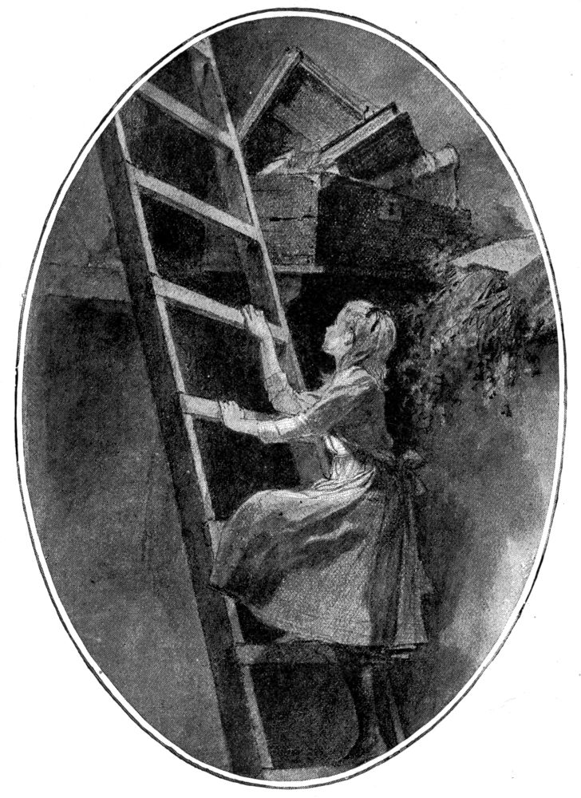
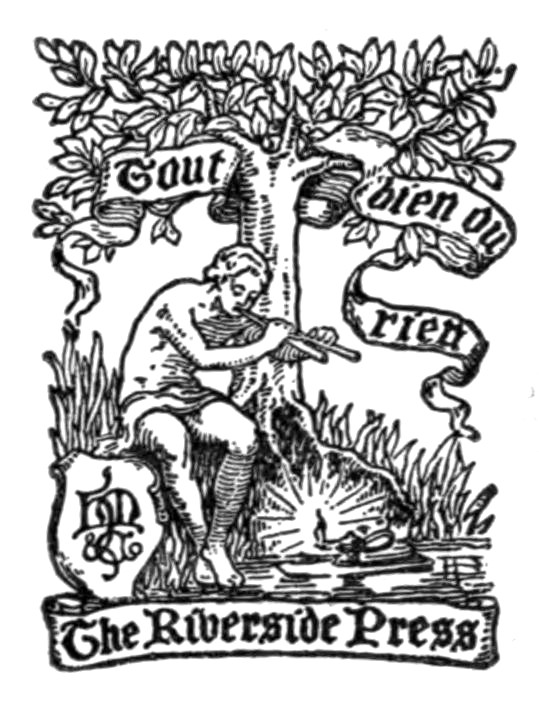
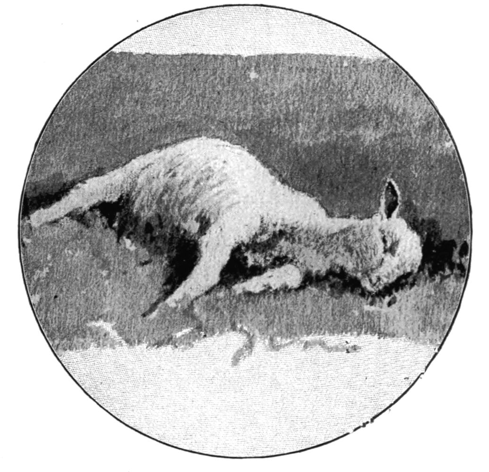

The Project Gutenberg eBook of The Little Fig-tree Stories, by Mary Hallock Foote
Title: The Little Fig-tree Stories
Author: Mary Hallock Foote
Release Date: February 24, 2022 [eBook #67485]
Language: English
Produced by: Charlene Taylor and the Online Distributed Proofreading Team at https://www.pgdp.net (This file was produced from images generously made available by The Internet Archive/American Libraries.)
Books by Mary Hallock Foote.
THE CHOSEN VALLEY. A Novel. 16mo, $1.25; paper, 50 cents.
THE LED-HORSE CLAIM. Illustrated. 16mo, $1.25; paper, 50 cents.
JOHN BODEWIN’S TESTIMONY. 12mo, $1.50; paper, 50 cents.
THE LAST ASSEMBLY BALL, and THE FATE OF A VOICE. 16mo, $1.25.
IN EXILE, AND OTHER STORIES. 16mo, $1.25.
CŒUR D’ALÉNE. A Novel. 16mo, $1.25.
THE CUP OF TREMBLING, AND OTHER STORIES. 16mo, $1.25.
HOUGHTON, MIFFLIN & CO.
Boston and New York.

UP THE LADDER TO THE SCUTTLE (Page 160)
BY
MARY HALLOCK FOOTE
WITH ILLUSTRATIONS BY THE AUTHOR

BOSTON AND NEW YORK
HOUGHTON, MIFFLIN AND COMPANY
The Riverside Press, Cambridge
1899
COPYRIGHT, 1899, BY MARY HALLOCK FOOTE
ALL RIGHTS RESERVED.
These stories were originally published in the St. Nicholas Magazine, and are reprinted here by kind permission of the Century Company.
The profits of the volume are dedicated to the Children’s Hospital of San Francisco.
[Pg 1]
There is a garden on a hill slope between the snows of the Sierra Nevada and the warm, rich valleys of the coast. It is in that region of Northern California where the pine belt and the fruit belt interlace. Both pine and fruit trees grow in that mountain garden, and there, in the new moon of February, six young Almond trees burst into flower.
The Peach and Plum trees in the upper garden felt a glow of sympathy with their forward sisters of the south, but the matronly Cherry trees shook their heads at such an untimely show of blossoms. They foresaw the trouble to come.
“The Almond trees,” they said, “will lose their fruit buds this year, as they did last and[Pg 2] the year before. Poor things, they are so emotional! The first whisper of spring that wanders up the foothills sets them all aflame; out they rush, with their hearts on their sleeves, for the frosts to peck at. But what can one do? If you try to reason with them, ‘Our parents and grandparents always bloomed in February,’ they will tell you, ‘and they did not lose their fruit buds.’”
“The Almond trees come of very ancient stock,” said the Normandy Pear, who herself bore one of the oldest names in France. “Inherited tendencies are strong in people of good blood. One of their ancestors, I have heard, was born in a queen’s garden in Persia, a thousand years ago; and beautiful women, whose faces the sun never shone upon, wore its blossoms in their hair. And as you probably know, their forefathers are spoken of in the Bible.”
“A number of persons, my dear, are spoken of in the Bible who were no better than they should be,” said the eldest Apple tree. “We go back to the ‘Mayflower,’—that is far[Pg 3] enough for us; and none of our family ever dreamed of putting on white and pink in February. It would be flying in the face of Providence.”
“White and pink are for Easter,” said the Pear tree, whose grandparents were raised in a bishop’s garden. “I should not wish to put my blossoms on in Lent.”
The Apple tree straightened herself stiffly.
“We do not keep the church fasts and feasts,” she said; “but every one knows that faith without works is dead. What are these vain blossoms that we put forth for a few days in the spring, without the harvest that comes after?”
“Now the Apple tree is going to preach,” said the light-hearted Peach tree, stepping on the Plum tree’s toes. “If we must have preaching, I had rather listen to the Pines. They, at least, have good voices.”
“Those misguided Almonds are putting out all their strength in fleshly flowers,” the Apple tree continued; “but how when the gardener comes to look for his crop? We all know, as[Pg 4] the Cherry trees said, what happened last year and the year before. It cannot be expected that the Master of the Garden will have patience with them forever.”
“The Master of the Garden!” Four young Fig trees, who stood apart and listened in sorrowful silence to this talk of blossoms, repeated the words with fear and trembling.
“How long,—how much longer,”—they asked themselves, “will he have patience with us?”
It was now the third spring since they had been planted, but not one of the four sisters had yet produced a single flower. With deep, shy desire they longed to know what the flower of the fig might be like. They were all of one age, and they had no parent tree to tell them. They knew nothing of their own nature or race or history. Two seasons in succession, a strange, distressful change had come upon them. They had felt the spring thrills, and the sap mounting in their veins; but instead of breaking out into pink and white flowers, like the happy trees around[Pg 5] them, ugly little hard green knobs had crept out of their tender bark, and these had swollen and increased in size till they were bowed with the burden of their deformity. Fruit this could not be, for they had seen that fruit comes from a flower, and no sign of blossom or bud had ever been vouchsafed them. When inquisitive hands came groping, and feeling of the purple excrescences upon their limbs, they covered them up in shame and tried to hide them with their broad green leaves. In time they were mercifully eased of this affliction; but then the frosts came, and the winter’s dull suspense, and then another spring’s awakening to hope and fear.
“Perhaps we were not old enough before,” they whispered encouragement to one another. “Blossoms no doubt are a great responsibility. Had we had them earlier, we might have been foolish and brought ourselves to blame, like the Almond trees. Let us not be impatient; the sun is warm, but the nights are cold. Do not despair, dear sisters; we may have flowers yet. And when they do[Pg 6] come, no doubt they will be fair enough to reward us for our long waiting.”
They passed the word on softly, even to the littlest Fig-tree sister that stood in rocky ground close to the wall that shut the garden in from the pine wood at its back. The Pines were always chanting and singing anthems in the wood; but though the sound was beautiful, it oppressed the little Fig tree, and filled her with melancholy. Moreover, it was very dry in the ground where she stood, and a Fig tree must have drink.
“Sisters, I am very thirsty!” she cried. “Have you a little, a very little water that you could spare?”
The sister Fig trees had not much of anything to spare; they were spreading and growing fast, and their own soil was coarse and stony. The water that had so delicious a sound in coming seemed to leak away before their eager rootlets had more than tasted it; still they would have shared what they had, could they have passed it to their weaker sister. But the water would not go uphill;[Pg 7] it ran away down, instead, and the Peach and Plum and Pear trees grew fat with what the Fig trees lacked.
“Courage, little sister!” they called to the fainting young tree by the wall. “The morning sun is strong, but soon the shadow of the wood will reach us. Cover thy face and keep a good heart. When our turn shall come, it will be thy turn too; one of us will not bloom without the others.”
It was only February, and the Almond trees stood alone, without a rival in their beauty. They stood in the proudest place in the garden, in full view both from the road and from a high gallery that ran across the front of the house where the Master of the Garden lived. The house faced the west, and whenever the people came out to look at the sunset they admired the beauty of the Almond trees, with their upright shoots, tipped and starred with luminous blossoms, against the deep, rich colors in the west; and when the west faded, as it did every evening, a lamp on a high post by the gate, bigger and brighter[Pg 8] than the brightest star, was set burning,—“for what purpose,” thought the Almond trees, “but to show our beauty in the night?” So they watched through the dark hours, and felt the intoxication of the keen light upon them, and marveled at their own shadows on the grass.
They were somewhat troubled because so many of their blossoms were being picked; but the tree that stood nearest the house windows rose on tiptoe, and behold! each gathered spray had been kept for especial honor. Some were grouped in vases in the room, or massed against the chimney-piece; others were set in a silver bowl in the centre of a white table, under a shaded lamp, where a circle of people gazed at them, and every one praised their delicate, sumptuous beauty.
But peepers as well as listeners sometimes learn unpleasant truths about themselves.
“Aren’t we picking too many of these blossoms?” asked the lady of the house. “I’m afraid we are wasting our almond crop.”
[Pg 9]
“Almond trees will never bear in this climate,” said the Master of the Garden. “Better make the most of the blossoms while they last. The frost will catch them in a week or two.”
So the mother and children gathered the blossoms recklessly,—to save them, they said. Then a snow fall came, and those that had been left on the trees were whiter than ever for one day, and the next day they were dead. Each had died with a black spot at its core, which means the death that has no resurrection in the fruit to come.
After the snow came rain and frost, and snow again. The white Sierra descended and shook its storm cloak in the face of laughing Spring, and she fled away downward into the warm valleys. Alas, the flatterer! But the Almond trees alone had trusted her, and again their hope of fruit was lost.
“Did we not say so?” muttered the Apple tree between her chattering teeth. She was the most crabbed and censorious of the sisters, and by her talk of fruit one might have supposed[Pg 10] her own to be of the finest quality; but this was not the case, and the gardener only that year had been threatening, though she did not know it, to cut off her top and graft her with a sweeter kind.
The leaves of the Almond tree are not beautiful, neither is her shape a thing to boast of. When spring did at last come back to stay, the Almonds were the plainest of all the trees. Their blossoms were like bright candles burned to the socket, that would light no more; their “corruptible crown” of beauty had passed to other heads. No one looked at them, no one pitied them, except the Fig trees, who wondered which had most cause to mourn,—they, who had never had a blossom, or the Almond trees, who had risked theirs and lost them all before the time of blossoms came.
The Fig trees’ reproach had not been taken away. While every tree around them was dressed in the pride of the crop to come, they stood flowerless and leafless, and burned with shame through all their barren shoots.
[Pg 11]
When the Master of the Garden came with his children to look at them, they hung their heads and were afraid.
“When will they blossom, like the other trees,” the children asked, “and what sort of flower will they bear?”
The Fig trees held their breath to hear the answer.
“A Fig tree has no flower, like the other fruit trees,” said the Master of the Garden. “Its blossom is contained in the fruit. You cannot see it unless you cut open the budding figs, and then you would not know it was a flower.”
“What is the use of having blossoms, if no one ever sees them?” one of the children asked.
“What is the use of doing good, unless we tell everybody and brag about it beforehand?” the father questioned, smiling.
“I thought the best way was—you know—to do it in secret,” said the child.
“That’s what we are taught; and some persons do good in that way, and cover it up[Pg 12] as if they were ashamed of it. And so the Fig tree doesn’t tell anybody when it is going to bear fruit.”
The Fig trees had heard their doom. To the words that followed they had not listened; nor would they have understood much more of it than the child of its father’s meaning.
“What is this he calls our fruit?” they asked each other in fear and loathing. “Was that our fruit,—those green and purple swellings, that unspeakable weight of ugliness? Will it come year after year, and shall we never have a flower? The burden without the honor, without the love and praise, that beauty brings. That is the beginning and the end with us. Little sister, thou art happier than we, for soon thy burden-bearing will be done. Uncover thy head and let the sunbeams slay thee, for why should such as we encumber the ground!”
Trees that grow in gardens may have long memories and nature teaches them a few things by degrees, but they can know little of what goes on in the dwellings or the brains[Pg 13] of men, or why one man should plant and call it good and later another come and dig up the first man’s planting. But so it happened in this garden. “The stone which the builders rejected, the same was made the head of the corner.”
“These little Fig trees with their strange, great leaves,—why were they put off here by themselves, I wonder?” A lady spoke who had lately come to the cottage. She was the wife of the new Master of the Garden. “I wish we had them where we could see them from the house,” she said. “All the other trees are commonplace beside them.”
“They are not doing well here,” said her husband. “This one, you see, is nearly dead. They must be transplanted, or we shall lose them all.”
Then followed talk which set the Fig trees a-tremble with doubt and amazement and joy. They were to be moved from that arid spot,—where, they knew not, but to some place of high distinction! They—the little aliens who had stood nearest the wall and thirsted[Pg 14] for a bare existence—were to be called to the front of the garden and have honor in the presence of all! The despised burden which they had called their deformity they heard spoken of as the rarest fruit of the garden, and themselves outvalued beyond all the other trees, for that, having so little, they had done so much.
Beauty too was theirs, it appeared, as well as excellence, though they could scarcely believe what their own ears told them; and they had a history and a family as old as those of the Almond tree, who can remember nothing that did not happen a thousand years ago and so has never learned anything in the present.
But the Fig trees would have been deeply troubled at their promotion could they have known what it was to cost their neighbors the Almond trees.
“Two we will keep for the sake of their flowers, but the others must go, and give room for the Figs.” So said the new Master, and so it was done. The unfruitful Almond trees were dug up and thrown over the wall,—all[Pg 15] but the two whom their sisters had ransomed with their lives; for beauty has its price in this world and there must be some one to pay it.
When another spring came round, it was the little Fig tree that stood in the bright corner where the splendor of the road lamp shone upon its leaves all night. Its leaves were now as broad as a man’s outspread hand, and its fruit was twice the size it had been the season before.
Its sister trees stood round and interlaced their boughs about it.
“Lean on us, little one,” they said, regarding it with pride.
“But you have your own load to bear.”
“We scarcely feel it,” said the happy trees.
This was true; for the burden that had seemed beyond their strength, when their hearts were heavy with shame and despondency, they could bear up lightly now, since they had learned its meaning and its worth.
The new Master’s children were so full of the joy of spring in that mountain garden—for[Pg 16] they too, like the little Fig trees, had been transplanted from arid ground—they had no words of their own in which to utter it. So their mother taught them some words from a song as old, almost, as the oldest garden that was ever planted:—
“For, lo, the winter is past, the rain is over and gone; the flowers appear on the earth; the time of the singing of birds is come, and the voice of the turtle is heard in our land; the fig tree putteth forth her green figs, and the vines with the tender grape give a good smell.”
“Awake, O north wind; and come, thou south; blow upon my garden, that the spices thereof may flow out.”
[Pg 17]
Until Jack Gilmour was seven years old his home had been at his grandfather’s house in a country “well wooded and watered,” as the Dutch captain who discovered it described it to his king.
There was water in the river; there was water in the ponds that lay linked together by falling streams among the hills above the mill; there was water in the spring lot; there was water in the brook that ran through the meadow across the road; there was water in the fountain that plashed quietly all through the dark, close summer nights, when not a leaf stirred, even of the weeping ash, and the children lay tossing in their beds, with only their nightgowns covering them. And besides all these living, flowing waters, there was water in the cistern that lay concealed under the[Pg 18] foundations of the house. Not one of the grandchildren knew who had dug it, or cemented it, or sealed it up, for children and children’s children to receive their first bath from its waters. The good grandfather’s care had placed it there; but even that fact the little ones took for granted, as they took the grandfather himself,—as they took the fact that the ground was under their feet when they ran about in the sunshine.
In an outer room, which had been a kitchen once (before Jack’s mother was born), there was a certain place in the floor that gave out a hollow sound, like that from the planking of a covered bridge, whenever Jack stamped upon it. Somebody found him, one day, trying the echoes on this queer spot in the floor, and advised him to keep off it. It was the trapdoor which led down into the cistern; and although it was solidly made and rested upon a broad ledge of wood—well, it had rested there on that same ledge for many years, and it wasn’t a pleasant thought that a little boy in kilts should be prancing about[Pg 19] with only a few ancestral planks between him and a hidden pit of water.
Once, when the trapdoor had been raised for the purpose of measuring the depth of the water in the cistern, Jack had looked down and had watched a single spot of light wavering over the face of the dark, still pool. It gave him a strange, uncomfortable feeling, as if this water were something quite unlike the outdoor waters, which reflected the sky instead of the under side of a board floor. This water was imprisoned, alone and silent; and if ever a sunbeam reached it, it was only a stray gleam wandering where it could not have felt at home, and must have been glad to leap out again when the sunbeam moved away from the crack in the floor that had let it in.
That same night a thunderstorm descended; the chimneys bellowed, and the rain made a loud trampling upon the roof. Jack woke and felt for his mother’s hand. As he lay still, listening to the rain lessening to a steady, quiet drip, drip, he heard another[Pg 20] sound, very mysterious in the sleeping house,—a sound as of a small stream of water falling from a height into an echoing vault. His mother told him it was the rain water pouring from all the roofs and gutters into the cistern, and that the echoing sound was because the cistern was “low.” Next morning the bath water was deliciously fresh and sweet; and Jack had no more unpleasant thoughts about the silent, sluggish old cistern.
Now, there are parts of our country where the prayer “Give us this day our daily water” might be added to the prayer “Give us this day our daily bread;” unless we take the word “bread” to mean all that men and women require to preserve life to themselves and their children. That sad people of the East to whom this prayer was given so long ago could never have forgotten the cost and value of water.
If you turn the pages of a Bible concordance to the word “water,” you will find it repeated hundreds of times, in the language of supplication, of longing, of prophecy, of[Pg 21] awful warning, of beautiful imagery, of love and aspiration. The history of the Jewish people in their wanderings, their wars and temptations, to their final occupation of the promised land, might be traced through the different meanings and applications of this one word. It was bargained, begged, and fought for, and was apportioned from generation to generation. We read among the many stories of those thirsty lands how Achsah, daughter of Caleb the Kenizzite, not content with her dowry, asked of her father yet another gift, without which the first were valueless: “For thou hast given me a south land; give me also springs of water. And Caleb gave her the upper springs and the nether springs.”
Now, our little boy Jack was seven years old, and had to be taken more than halfway across the continent before he learned that water is a precious thing. He was taken to an engineer’s camp in a cañon of a little, wild river that is within the borders of that region of the far West known as the “arid belt.”
Well, there was water in this river; but[Pg 22] after the placer-mining began, in the month of May, and Moore’s Creek brought down the “tailings” from the mines and mingled them with the current of the river, its waters became as yellow as those of the famous Tiber as it “rolls by the towers of Rome,”—yellow with silt, which is not injurious; but it is not pleasant to drink essence of granite rock, nor yet to wash one’s face in it. They made a filter and filtered it; but every pailful had to be “packed,” as they say in the West, by the Chinese cook and the cook’s assistant. Economy in the use of water became no more than a matter of common consideration for human flesh.
In addition to the river there was a stream that came down the gulch close beside the camp. This little stream was a spendthrift in the spring and wasted its small patrimony of water; by the middle of summer it had begun to economize, and by September it was a niggard,—letting only a small dribble come down for those at its mouth to cherish in pools or pots or pails, or in whatever it could be gathered. This water of the gulch was frequently[Pg 23] fouled by the range cattle that came crowding down to drink, mornings and evenings. Dead leaves and vegetation lay soaking in it, as summer waned. It was therefore condemned for drinking, but served for bathing or for washing the camp clothing, and was exceedingly precious by reason of its small and steadily decreasing quantity.
One morning, late in July, Jack was fast asleep and dreaming. The sun was hot on the great hills toward the east,—hills that had been faintly green for a few weeks in the spring, but were now given up to the mingled colors of the gray-green sagebrush and the dun-yellow soil.
They would have been hills of paradise, could rain have fallen upon them as often as it falls upon the cedar-crowned knolls of the Hudson; for these hills are noble in form and of great size,—a family of giants as they march skyward, arm in arm and shoulder to shoulder,—and the sky above them is the sky we call “Italian.” The “down-cañon wind,” that all night long had swept the gulch from[Pg 24] its source in the hills to its mouth in the river, had fainted dead away in the heat of the sun. Presently the counter wind from the great hot plains would begin to blow, but this was the breathless pause between.
The flies were tickling Jack’s bare legs and creeping into the neck of his nightgown, where the button was off, as usually it is from a seven-year-old’s nightgown. He was restless, “like a dog that hunts in dreams,” for he was taking the old paths again that once he had known so well.
From the eastern hills came the mingled, far-off bleating, the ululation of a multitude of driven sheep. The sound had reached Jack’s dreaming ear. Suddenly his dream took shape, and for an instant he was a happy boy.
He was “at home” in the East. It was sheep-washing time, the last week in May; the apple orchards were a mass of bloom and the deep, old, winding lanes were sweet with their perfume. Jack was hurrying up the lane by the Long Pond to the sheep-washing place, where the water came down from the pond in[Pg 25] a dark, old, leaky, wooden flume, and was held in a pool into which the sheep were plunged by twos and by threes, squeezed and tumbled about and lifted out to stagger away under the apple trees and dry their heavy fleeces in the sun. Jack was kicking in his sleep, when his name was called by a voice outside the window and he woke. Nothing was left of the dream, with all its sweets of sight and sound and smell, but the noise of the river’s continuous wrestle with the rocks of the upper bend, and that far-off multitudinous clamor from over the sun-baked hills.
“Jack, come out!” said the voice of Jack’s big cousin. “They are going to ‘sheep’ us. There’s a band of eight thousand coming!”
There was a great scattering of flies and of bedclothes, as Jack leaped out. He wasted no regrets upon the past,—one isn’t so foolish as that at seven years old,—but was ready for the joys of the present. Eight thousand sheep, or half that number (allowing for a big cousin’s liberal computation), were a sight worth seeing. As to being “sheeped,”[Pg 26] what was there in an engineer’s camp to “sheep,” unless the eight thousand woolly range-trotters should trot over tents and house roofs and stovepipes and all, like Santa Claus’s team of reindeer!
Jack was out of bed and into his clothes in a hurry, and off over the hill with his cousin, buttoning the buttons of his “star” shirt waist on the way.
The “band” was pouring over the hill slopes in all directions, making at full speed for the river. The hills themselves seemed to be dizzily moving. The masses of distant small gray objects swarmed, they drifted, they swam, with a curious motionless motion. They looked like nothing more animated than a crop of gray stones, nearly of a size, spreading broadly over the hills and descending toward the river with an impulse which seemed scarcely more than the force of gravitation.
The dogs were barking, the shepherds were racing and shouting to head off the sheep and check their speed, lest the hundreds behind[Pg 27] should press upon the hundreds in front and force them out into deep water. The hot air throbbed with the tumult.
When the thirst of every panting throat had been slaked and the band began to scatter along the hill slopes, the boys went forward to speak with the sheepmen.
A few moments afterward both lads were returning to the camp on a run, to ask permission to accept from the shepherds the gift of a lamb that couldn’t “keep up” with the band. It had run beside its mother as far as its strength would carry it, and then it had fallen and been trampled; and there it must lie unless help could revive it. A night on the hills, with the coyotes about, would finish it.
Permission was given, and breakfast was a perfunctory meal for the children by reason of the lamb lying on the strip of shade outside. After breakfast they sopped its mouth with warm milk, they sponged it with cold water, they tried to force a spoonful of mild stimulant between its teeth. They hovered and watched for signs of returning life. The[Pg 28] lamb lay with its eyes closed; its sides, that were beginning to swell, rose and sank in long, heavy gasps. Once it moved an ear, and the children thought it must be “coming to.” Upon this hopeful sign they began at once to make plans for the lamb’s future life and joys with them in the cañon.
It should be led down to the river, night and morning, to drink; it should have bran soaked in milk; it should nibble the grass on the green strip; they would build it a house, for fear the coyotes should come prowling about at night; it should follow them up the gulch and over the hills, and race with them in the evenings on the river beach, as “Daisy,” the pet fawn, had done—until something happened to her (the children never knew what), and the lovely creature disappeared from the cañon and out of their lives forever.

THE LAMB THAT COULDN’T KEEP UP
When the strip of morning shadow was gone, they lifted the lamb tenderly and carried it to the strip of afternoon shadow on the other side of the house; and still it took no[Pg 29] notice of the water or the milk, or of all the children’s care, nor seemed to hear that they were planning a happy life for it, if only it would get well.
When twilight came, and still it had not moved, the children held anxious consultation on the subject of their neighbors, the coyotes; but their father assured them there would be no danger, so near to the house; and it seemed a pity to disturb the poor lamb.
When the cool night wind began to blow down the cañon again, and the children were asleep, the lamb made its last effort. It is the instinct of all dumb creatures to keep upon their feet as long as they can stand; for when they have fallen the herd has no compassion,—or it may be that its comrades press around the sufferer out of curiosity or mistaken sympathy, and so trample it out of existence without meaning the least harm. The little nursling of the range obeyed this instinct in its last moments,—struggled to its feet and fell, a few steps farther on; and the lamb that couldn’t keep up was at rest.
[Pg 30]
No more toiling over hills and mountains and across hot valleys, packed in the midst of the band, breathing the dust, stunned with the noise, always hungry, almost always athirst, baked by the sun, chilled by the snow, driven by the wind,—drifting on, from mountain to river, from river to plain.
This one, out of eight thousand, could rest at last, on cool grass, with the peace and the silence and the room of a summer night around it.
The band slept upon the hills that night; the next morning they crossed the gulch above the camp, and drank up by the way all the water of the little stream. Not another drop was seen for days. At length it gathered strength enough to trickle down again, but it was necessary to dip it up and let it stand in casks to settle before it was fit for use; and meanwhile the Chinamen carriers did double duty.
Those eastern hills in spring had been covered with wild flowers,—the moss pink, lupines both white and blue, wild phlox, the[Pg 31] small yellow crocus, beds of tiny sweet-scented wild pansies, the camas flower, and a tall-stemmed, pale lilac lily,—the queen of the hill garden. But when spring came again, the old pathways were like an ash heap. The beautiful hill garden was a desert.
When these great sheep bands pass over the country, from range to range, from territory to territory, they devour not only the vegetation of one year, but the seeds, the roots, and, with these, the promise of the next.
It is the migration of the Hungry and the Thirsty; and a cry goes out against them, like the cry of Moab when the children of Israel camped within its borders:—
“Surely this multitude will lick up all that is round about us.”
[Pg 32]
There is a little girl who hangs upon her mother’s chair, getting her head between her mother’s work and the light, and begs for pictures.
She expects her mother to make these pictures on some bit of paper treasured for the purpose which she offers, with a book to rest it on, and a stubby pencil notched with small toothmarks, the record of moments of perplexity when Polly was making her own pictures.
It is generally after a bad failure of her own that she comes to her mother. The pang of disappointment with her own efforts is apt to sharpen her temper a little; it does not make Polly more patient with her mother’s mistakes that she makes mistakes herself. But between critic and artist, with such light as the dark lantern of a little girl’s head permits[Pg 33] to fall upon the paper, the picture gets made somehow, and before it is finished Polly’s heart will be so full of sunshine that she will insist upon comparisons most flattering to the feelings of her artist, between their different essays at the same subject.
It is a subject they are both familiar with; and it is wonderful, considering the extent of Polly’s patronage, that her artist’s work does not better itself.
It is always a picture of a young person on horseback,—a young person about the age of Polly, but much handsomer and more grown-up looking. And the horse must be a pony with a flowing mane and tail, and his legs must be flung out, fore and aft, so that in action he resembles one of those “crazy-bugs” (so we children used to call them) that go scuttling like mad things across the still surface of a pond. In other respects he may be as like an ordinary pony as mamma and the stubby pencil can make him. But the young person on the pony must be drawn in profile, because Polly cannot make profiles, except[Pg 34] horses’ profiles; her young persons always look straight out of the picture as they ride along, and the effect, at full speed, on a horse with his legs widely extended from his body, is extremely gay and nonchalant.
With the picture in her hand, the little girl will go away by herself and proceed to “dream and to dote.”
She lives in a horsey country. Horses in troops or “bands” go past by the trails, on the one side of the river or the other. Sometimes they ford where the water is breast-high over the bar. It is wild and delicious to hear the mares whinnying to their foals in midstream, and the echo of their voices, with the rushing of the loud water pent among the hills.
Often the riders who are in charge of the band encamp for the night on the upper bend of the river, and the red spark of their camp-fire glows brightly about the time the little girl must be going to bed; for it is in spring or fall the bands of horses go up into the hills or down into the valleys, or off, one does not[Pg 35] know where,—to a “round up,” perhaps, where each stockman counts his own, and puts his brand on the young colts. Over the hills, where Polly and her big brother go wild-flower hunting, horses wander loose and look down from the summits, mere specks, like black mice, against the sky; they are plainly to be seen from miles away, for there is not a tree anywhere upon these hills. Sometimes a single horse, the chieftain of a troop, will stand alone on a hilltop and take a look all the wide country round, and call, in his splendid voice like “sounding brass,” to the mares and colts that have scattered in search of alkali mud to lick, or just to show, perhaps, that they are able to get on without his lordship. He will call, and if his troop do not answer, he will condescend to go a little way to meet them, halting and inquiring with short whinnies what they are about. Sometimes, in spite of discipline, they will compel him to go all the way to meet them; for even a horse soon tires of dignity on a hilltop all alone, with no one to see how it becomes him.
[Pg 36]
Polly likes to meet stray horses on her walks, close enough to see their colors and tell which are the pretty ones, the ones she calls hers. They stare at her from under breezy forelocks, and no doubt think themselves much finer creatures than little girls who have only two feet to go upon. And the little girl thinks so, too,—or so it would seem; for every evening after sunset when she runs about the house bareheaded she plays she is a horse herself. And not satisfied with being a horse, she plays she is a rider, too. Such a complex ideal as that surely never came into the brain of a “cayuse,” for all his big eyes and his tangle of hair which Polly thinks so magnificent.
The head and the feet of Polly and her tossing locks are pure horse; that is evident at a glance as she prances past the window. But the clinched, controlling hands are the hands of the rider,—a thrilling combination on a western summer evening, when the brassy sunset in the gate of the cañon is like a trumpet-note, and the cold, pink light on[Pg 37] the hills is as keen as a bugle-call, and the very spirit of “boots and saddles” is in the wind that gustily blows up from the plains, turning all the poplars white, and searching the quiet house from room to room for any laggard stay-indoors.
Within a mile of the house, in the cañon which Polly calls home, there is a horse ranch in a lovely valley opening toward the river. All around it are these treeless hills that look so barren and feed so many wild lives. The horses have a beautiful range, from the sheltered valley up the gulches to the summits of the hills and down again to the river to drink. The men live in a long, low cabin, attached to a corral much bigger than the cabin, and have an extremely horsey time of it.
I shouldn’t be surprised if it were among Polly’s dreams to be one of a picked company of little-girl riders, in charge of a band of long-tailed ponies, just the right size for little girls to manage; to follow the ponies over the hills all day, and at evening to fetch[Pg 38] water from the river and cook their own little-girl suppers in the dingy cabin by the corral; to have envious visits from other little girls, and occasionally to go home and tell mother all about it.
Now, in this country of real horses there were not many play-horses, and these few not of the first quality. Hobby-horses in the shops of the town were most trivial in size, meant only for riders of a very tender age. Some of them were merely heads of horses, fastened to a seat upon rockers, with a shelf in front to keep the inexperienced rider in his place.
There were people in the town, no doubt, who had noble rocking-horses for their little six-year-olds, but they must have sent for them on purpose; the storekeepers did not “handle” this variety.
So Polly’s papa, assisted by John Brown, the children’s most delightful companion and slave and story-teller, concluded to build a hobby-horse that would outdo the hobby-horse of commerce. (Brown was a modest,[Pg 39] tender-hearted man, who had been a sailor off the coast of Norway, among the islands and fiords, a miner where the Indians were “bad,” a cowboy, a ranchman; and he was now irrigating the garden and driving the team in the cañon.)
Children like best the things they invent and make themselves, and plenty of grown people are children in this respect; they like their own vain imaginings better than some of the world’s realities.
But Polly’s rocking-horse was no “vain thing,” although her father and John did have their own fun out of it before she had even heard of it.
His head wasn’t “made of pease-straw,” nor his tail “of hay,” but in his own way he was quite as successful a combination.
His eyes were two of Brother’s marbles. They were not mates, which was a pity, as they were set somewhat closely together so you couldn’t help seeing them both at once; but as one of them soon dropped out it didn’t so much matter. His mane was a strip of[Pg 40] long leather fringe. His tail was made up of precious contributions extorted from the real tails of Billy and Blue Pete and the team-horses, and twined most lovingly together by John, the friend of all the parties to the transfer.
The saddle was a McClellan tree, which is the framework of a kind of man’s saddle; a wooden spike, fixed to the left side of it and covered with leather, made a horn, and the saddle-blanket was a Turkish towel.
It was rainy weather, and the cañon days were short, when this unique creation of love and friendship—which are things more precious, it is to be hoped, even than horseflesh—took its place among Polly’s idols, and was at once clothed on with all her dreams of life in action.
When she mounted the hobby-horse she mounted her dream-horse as well; they were as like as Don Quixote’s helmet and the barber’s basin.
She rode him by firelight in the last half-hour before bedtime. She rode him just after[Pg 41] breakfast in the morning. She “took” to him when she was in trouble, as older dream-riders take to their favorite “hobbies.” She rocked and she rode, from restlessness and wretchedness into peace, from unsatisfied longings into temporary content, from bad tempers into smiles and sunshine.
She rode out the winter, and she rode in the wild and windy spring. She got well of the measles pounding back and forth on that well-worn seat. She took cold afterward, before the winds grew soft, experimenting with draughts in a corner of the piazza.
Now that summer gives to her fancies and her footsteps a wider range, the hard-worked hobby gets an occasional rest. (Often he is to be seen with his wooden nose resting on the seat of a chair which is bestrewed with clover blossoms, withered wild-roses, and bits of grass; for Polly, like other worshipers of graven images, believes that her idol can eat and drink and appreciate substantial offerings.) But when the dream grows too strong, the picture too vivid,—not mamma’s picture,[Pg 42] but the one in the child’s heart,—she takes to the saddle again, and the horsehair switch and the leather fringes float upon the wind, and her fancies mount, far above the lava bluffs that confine her vision.
Will our little girl-riders be as happy on their real horses, when they get them, as they are upon their dream-horses? Is the actual possession of “back hair” and the wearing of long petticoats more blissful than the knot, hard-twisted, of the ends of a silk handkerchief, which the child-woman binds about her brows when she walks—like Troy’s proud dames whose garments sweep the ground—in the skirt of her mother’s “cast-off gown”?
It depends upon the direction these imperious dream-horses will take with our small women. Will the rider be in bondage to the steed? Heaven forbid! for dream-horses make good servants but very bad masters. Will they bear her fast and far, and will she keep a quiet eye ahead and a constant hand upon the rein? Will they flag and flounder down in the middle-ways, where so many of[Pg 43] us have parted with our dream-steeds and taken the footpath, consoled to find that we have plenty of company and are not altogether dismayed? The dream-horses carry their child-riders beyond the mother’s following, so that the eyes and the heart ache with straining after the fleeting vision.
It is better she should not see too much nor too far along the way they go, since “to travel joyfully is better than to arrive.”
If only they could know their own “blessedness” while the way is long before them!
[Pg 44]
At the camp in the cañon they had a cow. It is true she sometimes broke away and went off with the herds on the range and had to be chased on horseback and caught with a lasso. They had chickens,—all that were left them from night raids by the coyotes;[1] and a garden, the products of which they shared with the jack-rabbits and the gophers. But the supply wagon brought fresh fruit from the town, ten miles away, and new butter from the[Pg 45] valley ranches. There were no mosquitoes, no peddlers, no tramps, no book agents, no undesirable neighbor’s children, whom one cannot scare away as one may the neighbor’s dogs and chickens when they creep through the fence, but must be civil to for the sake of peace and good-will,—which are good things in a neighborhood.
Jack Gilmour worked at his crude inventions in the shop, and was allowed to use grown-up tools under certain not too hard conditions; and Polly rode up and down the steep path to the river beach on the shoulders of the young assistant engineers—and assistant everything-elses. The mother was waited on and spoiled, as women are in camp; she was even invited to go fishing with her husband and Mr. Dane, one of the young assistants-in-general. It was a dull time for work in the camp, and there were good care-takers with whom Mrs. Gilmour could trust the children. The boy was the elder. He was learning those two most important elements of a boy’s education, up to nine years, according to Sir Walter Scott,—to[Pg 46] ride and to speak the truth. But he was only eight, and perhaps was not quite perfect in either.
He watched the three happy ones ride away, and as they turned on the hilltop and waved good-by to the little figure on the trail below, he was longing, with all the strength of desire an eight-year-old heart can know, for the time to come when he too should climb the hills and wave his hand against the sky before turning the crest, where he had so often stood and felt so small, gazing up into those higher hills that locked the last bright bend of the river from sight.
They were to go up Charcoal Creek; they were to cross the “Divide;” they were to go down Grouse Creek on the other side and camp on some unknown bit of the river’s shore.
The boy went stumbling back down the dusty path to his unfinished work in the shop,—the engine for a toy elevated road he was making. But the painfully fashioned fragments of his plan had no meaning for eyes that still saw only the hills against the[Pg 47] morning sky, and the three happy ones riding away.
This first trip led to a second and longer one, to the fishing-grounds up the river, by the trail on the opposite shore. Jack heard his father and Mr. Dane talking one morning at the breakfast-table about riding down to Turner’s and getting a pack-animal and some more riding animals,—and mamma was going again! What good times the grown-ups did have! And John Brown, Jack’s particular crony from the men’s camp, was going, to cook and take care of the animals. This word “animal” is used in the West to describe anything that is ridden or “packed,”—horse, mule, Indian pony, or “burro.” It is never applied to cattle or unbroken horses on the range; these are “stock.”
The party were to take a tent and stay perhaps a week, if no word came from the home camp to call them back.
Jack slipped away from the table and went out and hung upon the railing of a footbridge that crossed the brook. Beside learning how[Pg 48] to ride and to speak the truth, Jack was learning to whistle. He was practicing this last more persistently, perhaps, than either of the more important branches of knowledge,—let us hope because there was more need of practice; for he was as yet very far from being a perfect whistler. It was but a melancholy, tuneless little note in which he gave vent to his feelings, as he watched the trickling water.
“I’d like to take the boy,” his father was that moment saying at the breakfast-table in the cook-tent, “if we had anything he could ride.” And then he added, smiling, “There’s Mrs. O’Dowd.” The smile went around the table.
Mrs. O’Dowd, or “Peggy,” as she was variously called, was a gray donkey of uncertain age and mild but inflexible disposition who sometimes consented to carry the children over the hills at a moderate pace, her usual equipment being a side-saddle, which did not fit her oval figure (the curves of which turned the wrong way for beauty); so the side-saddle was always slipping off, obliging the children to slide down and “cinch up.”
[Pg 49]
The engineer’s house was built against a hill; from the end of the upper piazza a short bridge, or gang-plank, joined the hill and met a steep trail which led upward to the tents, the garden, the road to the lower camp, the road up the bluffs, and all the rest of the children’s world beyond the gulch. One of their favorite exercises with Mrs. O’Dowd was to ride her down the trail, and try to force her over this gang-plank. She would put her small feet cautiously one before the other, hanging her great white head and sniffing her way. The instant her toes touched the resonant boards of the bridge, she stopped, and then the exercises began. Mrs. O’Dowd’s gravity and resignation, in the midst of the children’s laughing and shouting and pulling and whacking, was most edifying to see; but she never budged. She saw the darlings of the household dance back and forth before her in safety; the engineers in their big boots would push past her and tramp over the bridge. Mrs. O’Dowd was a creature of fixed habits. Useless, flighty children, and people with[Pg 50] unaccountable ways of their own might do as they liked; it had never been her habit to trust Mrs. O’D. on such a place as that, and she never did.
“Yes, the boy might ride Peggy,” said Jack’s father. “He could keep her up with John and the pack-mule, if not with us.”
“Oh, I should not want him behind with the men,” said Jack’s mother,—“and those high trails! If he’s to go over such places, he must ride where you can look after his saddle-girths.” She could hear Jack’s disconsolate whistle as she spoke. “I hope he does not hear us,” she said. “It would break his heart to think he is going, and be left behind after all.”
“If the boy’s heart is going to break as easily as that, it is time it was toughened,” said his father, but not ungently. “I should tell him there is a chance of his going; but if it can’t be managed, he must not whine about it.”
Jack went to bed by himself, except on Sunday nights; then his mother went with[Pg 51] him, and saw that he laid his clothes in a neat pile on the trunk by his bed,—for in a camp bedroom trunks sometimes take the place of chairs,—and heard him say his prayers, and sometimes they talked together a little while before she kissed him good-night. That night was Sunday night, and Jack’s mother asked him, while she watched his undressing, if it ever made him dizzy to stand on high places and look down. Jack did not seem to know what that feeling was like; and then she asked him how far he had ever ridden on Mrs. O’Dowd at one time. Jack thought he had never ridden farther than Mr. Hensley’s ranch—that was three miles away, six miles in all, going and coming; but he had rested at the ranch, and had walked for a part of the journey when his sister Polly had resolved to ride by herself, instead of behind him, holding on to his jacket.
It made his mother very happy to tell the boy that the next day, if nothing happened to prevent, he was to set out with the fishing party for a week’s camping up the river. She[Pg 52] knew how, in his reticent child’s heart, he had envied them. He was seated on the side of his bed, emptying the beach sand out of his stockings, when she told him. He said nothing at first, and one who did not know his plain little face as his mother knew it might have thought he was indifferent. She took a last look at him, before leaving the room. It seemed but a very little while ago that the close-cropped whity-brown head on the pillow had been covered with locks like thistle-down, which had never been touched with the scissors; that the dark little work-hardened hands (for Jack’s play was always work) lying outside the sheet had been kissed a dozen times a day for joy of their rosy palms and dimples. And to-morrow the boy would put on spurs,—no, not spurs, but a spur, left over from the men’s accoutrements,—and he would ride—to be sure it was only Mrs. O’Dowd, but no less would the journey be one of the landmarks in his life. And many older adventurers than Jack have set out in this way on their first emprise,—not very heroically[Pg 53] equipped, except for brave and joyous dreams and good faith in their ability to keep the pace set by better-mounted comrades.
Jack woke next morning with a delightful feeling that this day was not going to be like any other day he had known. Preparations for the journey had already begun. In the cook-tent two boxes were being filled with things to eat and things to cook them with. These were to be covered with canvas, roped, and fastened, one on each side of the pack-mule’s pack-saddle. On the piazza, saddle-bags were being packed; guns, ammunition, fishing-rods, rubber coats, and cushions were being collected in a heap for John to carry down to the beach to be ferried across the river, where the man from Turner’s horse-ranch was already waiting with the animals. The saddle-horses and Mrs. O’Dowd were to cross by the ford above the rapids. The boat went back and forth two or three times, and in the last load went Jack and his mother and Polly in the care of one of the young engineers. The stir of departure had fired Polly’s imagination. It[Pg 54] was not mamma saying good-by to Polly,—it was Polly saying good-by to mamma, before riding off with “bubba” on an expedition of their own. She was telling about it, in a soft, joyous recitative, to any one who had time to listen. The man from Turner’s had brought, for Mrs. Gilmour to ride, a mule he called a lady’s animal, but remarked that for his own use he preferred one that would go. Mrs. Gilmour thought that she did, too; so the side-saddle was changed from the “lady’s animal” to the mule that “would go.”
The pack-mule was “packed,” the men’s horses were across the ford, mamma had kissed Polly, two pairs and a half of spurs were jingling impatiently on the rocks,—but where was Mrs. O’Dowd?
She was dallying at the ford,—she was coy about taking to the water. Sticks and straps and emphatic words of encouragement had no effect upon her. She had unfortunately had time to make up her mind, and she had made it up not to cross the river. She was persuaded finally, by means of a[Pg 55] “lass’ rope” around her neck. Everybody was laughing at her subdued way of making herself conspicuous, delaying the whole party and meekly implying that it was everybody’s fault but her own.
The camp of the engineers was on a little river of Idaho that rises in the Bitter-root range of the Rocky Mountains, and flows into the swift, silent current of the great Snake River, which flows into the Columbia, which flows into the Pacific; so that the waters of this little inland river see a great deal of grand and peculiar scenery on their way to the ocean. But the river as it flows past the camp is still very young and inexperienced. Its waters have carried no craft larger than a lumberman’s pirogue, or the coffin-shaped box the Chinese wood-drivers use for a boat. Its cañons have never echoed to a locomotive’s scream; it knows not towns nor villages; not even a telegraph pole has ever been reared on its banks. It is just out of the mountains, hurrying down through the gate of its last cañon to the desert plains. But young[Pg 56] and provincial as it is, it has an ancestral history very ancient and respectable, if mystery and tragedy and years of reticence can give dignity to a family history. The river’s story has been patiently recorded on the tablets of the black basalt bluffs that face each other across its channel. Their language it is not given to everybody to read. The geologists tell a wonderful tale which they learned from those inscriptions on the rocks. They do not say how many years ago, but long enough to have given a very ancient name to our river,—had there been any one living at that time to call it by a name,—it met with a fearful obstruction, a very dragon in its path, which threatened to devour it altogether, or to scatter it in little streams over the face of the earth. A flood of melted, boiling-hot lava burst up suddenly in the river’s bed, making it to boil like a pot, and crowded into the granite gorges through which the river had found its way, half filling them. It was a battle between the heavens and the earth,—the stream of molten rock, blinding[Pg 57] hot from the caverns beneath the earth’s crust, meeting the sweet cool waters from the clouds that troop about the mountains or hide their tops in mist and snow. The life-giving flood prevailed over that which brought only defacement and death. The sullen lava flux settled, shrank, and hardened at last, fitting into the granite gorges as melted lead fits the mould into which it is poured. The waters kept flowing down, never resting till they had worn a new channel in the path of the old one, only narrower and deeper, down through the intruding lava. When the river was first known to men, wherever its course lay through a granite gorge the granite was seen to be lined in places, often continuously for miles, with black lava rock, or basalt, standing in lofty palisades with deeply scarred and graven fronts and with long slides of crumbled rock at their feet, descending to the level of the river.
Another part of the river’s story has been toilsomely written in the trails that wind along its shores, worn by the feet of men and[Pg 58] animals. Whose feet were the first to tread them, and on what errands? This is the part of the river’s story some of us would like best to know. But this the geologist cannot tell us.
It was one of these hunters’, miners’, cowboys’, packers’, ranchmen’s trails the fishing-party followed on its way up the river. Through the cañon they wound along the base of the lava bluffs; then entered a crooked fold of the hills called Sheep Gulch, passing through willow thickets, rattling over the pebbles of a summer-dried stream, losing the breeze and getting more than they wanted of the sun. Sheep Gulch is one of the haunts of grouse, wood-doves, and “cotton-tails” (as the little gray rabbits are called to distinguish them from the tall leaping “jack-rabbits” of the sage-brush plains, which are like the English hare).
Above Turner’s horse-ranch, Sheep Gulch divides into two branches; up one of these goes the old Idaho City road. Where the gulch divides there is a disused cabin, (which[Pg 59] Jack remembered afterward because there they saw some grouse which they didn’t get,) and there they left the trail for the old stage-road. As they climbed the little divide which separates the waters (when there are any) of Sheep Gulch from those of Moore’s Creek, they were met by a fresh breeze which cooled their hot faces and seemed to welcome them to the hills. The hills were all around them now,—the beautiful mountain pastures, golden with their wind-sown harvest of wild, strong-stemmed grasses. As the grass becomes scarce on the lower ranges the herds of cattle climb to the higher, along the spiral trails they make in grazing, taking always, like good surveyors, the easiest upward grade.
In the fall the cattle-men send out their cowboys, or “riders,” to drive the herds down from these highest ranges, where snow falls early, and to collect them in some valley chosen for the autumn “round-up.”
At Giles’s ranch, on the divide, the party halted to cinch up and to ask a drink all[Pg 60] around from the spring which every traveler who has tasted it remembers.
The women of the household—a slender, dark-haired daughter and a stout, fair, flushed mother with a year-old baby—were busy, baby and all, in an outdoor kitchen, a delightful-looking place, part light and part shadow, and full of all manner of tools and rude conveniences that told of cheerful, busy living and making the best of things. They were preparing for the coming, next week, of the threshers,—a yearly event of consequence at a ranch,—fifteen men with horses for their machines and saddle-horses besides, all to be fed and lodged at the ranch. In the corral behind the big new barn, there were stacks of yellow and stacks of green, and between them a hay press, painted pink, which one could see as far as one could see Giles’s. Altogether it was lovely at Giles’s; but they were building a new house,—which, of course, they had a perfect right to do. But whoever stops there next year will find them all snugly roofed and gabled and painted[Pg 61] white; and it is to be feared the outdoor kitchen, with its dim corners full of “truck” and its lights and shadows, will be seen no more.
The old stage-road went gayly along a bit of high plain, and then, without the slightest hesitation or circumlocution, dropped off into the cañon of Moore’s Creek. These reckless old pioneer roads give one a vivid idea of the race for possession of a new mining-camp, and of the pluck it took to win. At the “freeze-out” stage-passengers probably got out and walked, and the driver “rough-locked” the wheels; but the horsemen of that new country doubtless took a fresh hitch on their cinches and went jouncing down the breakneck grade, with countenances as calm as those of the illustrious riders of bronze and marble horses we see in the public squares, unless they were tired of the saddle and walked down to rest themselves,—never their horses.
Jack’s short legs were getting numb with pressing the saddle, and he was glad to walk,[Pg 62] and to linger on his way down the wild descent into the cañon. It was the middle of September; Moore’s Creek had not more than enough water left to float the “Chinaman’s drive” of cord-wood, cut higher up on its banks. Its waters, moreover, were turbid with muddy tailings emptied into them from the sluice-boxes of the placer-miners who had been working all summer on the bars. Above Moore’s Creek the water of the river is clear as that of a trout-stream and iridescent with reflections from sky and shore; but after its union with that ill-fated stream it is obliged to carry the poor creek’s burden, and its own bright waters thenceforth wear the stain of labor. A breath of coolness, as of sunless rocks and damp, spicy shade, came up to them from the cañon; and a noise of waters, mingled with queer, discordant cries. It was dinner-time at the Chinamen’s camp and word was being passed up stream, from man to man, calling the wood-drivers to leave their work. They were not the sleek-braided, white-bloused, silk-sashed Chinese of the[Pg 63] house-servant variety. They had wild black hair, rugged, not fat, sleepy faces, and little clothing except the boots,—store boots, in which a Chinaman is queerer than in anything except a store hat. They struggled with the jam of cord-wood as if it were some sort of water-prey they had hunted down, and were now meeting at bay, spearing, thrusting, hooking with their long boat-hooks, skipping from rock to rock in midstream, hoarse with shouting.
The party had now left the stage-road and turned down the pack-trail along the creek toward its junction with the river. The pack-trail here crosses the creek by a bridge high above the stream; the bridge was good enough, but it was a question whether Mrs. O’Dowd, with her known prejudices, could be induced to go over it. It was quickly decided to get a “good ready,” as Jack said, and hustle the old lady down the trail between two of the horses and crowd her on the bridge before she had time to make up that remarkable mind of hers. This simple plan was[Pg 64] carried out with enthusiasm on the part of all but Mrs. O’D. herself.
Soon after leaving Giles’s, they had met a wagon-load of people townward bound from Gillespie’s, the beautiful river ranch above Moore’s Creek. Mr. Gilmour had stopped them to inquire if a pack-animal and two riding animals, mules or horses, could be sent from the ranch up to the fishing-camp, on a day set for the journey home; for the mules from Turner’s were to go back that same day, to start the next day but one, as part of a pack-train bound for Atlanta.
The people in the wagon “couldn’t say.” Most of the horses were out on the range; those at the ranch were being used for hauling peaches to town, fording Moore’s Creek and the river, and scaling the “freeze-out.” But Mr. Gillespie himself was at home; the travelers had better stop on the way up and find out.
So, after crossing the bridge and gaining the good trail along the river-bank, Mr. Dane spurred on ahead and forded the river, to[Pg 65] make the necessary inquiries at the ranch. Gillespie’s is on the opposite side of the river from the packer’s trail. It is most beautiful with the sun in the western sky, its hills and water-front of white beech and pine trees all in shadow, and a broad reflection floating out into the river at its feet.
The sun was still high and the shadows were short; but the river ranch was a fair picture of a frontier home as they looked back at it passing by on the other side,—the last home they should see on the wild way they were taking.
The trail went winding up and up, and still higher, until they were far above the river and could see, beyond the still reflections that darkened it by Gillespie’s, the white-whipped waters of the rapids above. And the higher they went, the more hills beyond hills rose along the horizon widening their view.
Mr. Dane had rejoined the party, with a satisfactory report from the ranch. He rode ahead on his blue-roan Indian pony twirling[Pg 66] his romál, a long leathern strap attached to the bridle, the end divided like a double whip-lash by means of which and a pair of heavy blunt spurs “Blue Pete” and his rider had come to a perfect understanding. Blue Pete was a sulky little brute, with a broad white streak down his nose and a rather vicious eye, but he was tough and unsensitive and minded his business.
Next came Jack’s mamma on the “mule that would go”—with a will, as far as Turner’s,—but after that needed the usual encouragement; a gentle-paced creature though, and sure-footed on a bad trail. Then came Jack on Mrs. O’Dowd. The poor old girl had been vigorously cinched and it wasn’t becoming to her figure; but those were bad places for a saddle to turn, even with an active, eight-year-old boy on it.
The boy was deeply content, gazing about him at the river, the hills, the winding trail ahead, and serenely poking up Mrs. O’Dowd with his one spur in response to the packer’s often-repeated command to “Keep her up!”[Pg 67] When Mrs. O’Dowd refused to be kept up Jack’s father made a rush at her—a kind of business his good horse Billy must have despised, for Billy had points that indicated better blood than that which is usually found in the veins of those tough little “rustlers” of the desert and the range. He loved to lead on a hard trail, with his long, striding walk, his cheerful, well-opened eyes to the front. He was gentle, but he was also scornful; he was not a “lady’s animal;” he had a contempt for paltry little objectless canters over the hills with limp-handed women and children flopping about on his back. He liked to feel there was work ahead; a long climb and a bad trail did not frighten him; he looked his best when he was breasting a keen ascent with the wind of the summit parting his thin forelock, his ears pointed forward, his breath coming quick and deep, his broad haunches working under the saddle. Poor work indeed he must have thought it, hustling a lazy, sulky old donkey along a trail that was as nothing to his own sinewy legs.
[Pg 68]
After Billy came the pack-mule, driven by the man from Turner’s, a square-jawed, bronzed young fellow, mounted also on a mule and conversing amicably with John Brown. The lunch-bag had been passed down the line, but there was no halt, except for water at the crossing of a little gulch. The trail wound in and out among the spurs of the hills and up and down the rock-faced heights. They passed a roofless cabin, once the dwelling of some placer-miners, and farther on the half-obliterated ditch they had built leading to the deserted bars, where a few gray, warped sluice-boxes were falling to pieces in the sun.
Between two and three o’clock they came in sight of some large pine-trees, sheltering a half circle of white sand beach that sloped smoothly to the river. Above the pines a granite cliff rose, two hundred and fifty feet of solid rock against a hill five hundred or more feet higher, that shut off the morning sun. Between the cliff and the lava bluffs opposite, the eastern and western shadows[Pg 69] nearly met across the river. There were deep, still pools among the rocks near shore, where the large trout congregate. Below the shadowed bend, the river spread out again suddenly in the sunlight that flashed white as silver on the ripples of a gravelly bar. This was the spot chosen at sight for the fishing-camp.
A bald eagle perched on a turret of the lava bluffs across the river watched the party descending the trail. At the report of a rifle echoing among the rocks, he rose and wheeled away over the pine-trees without hurrying himself or dropping a single feather in acknowledgment of the shot. It was a dignified, rather scornful retreat.
Where the trail hugs the cliff closest on its way around the bend, it passes under a big overhanging rock. No one, I am sure, ever rode under it for the first time without looking up at the black crack between it and the cliff, and wondering how far up the crack goes, and when the huge mass will fall. There is a story that the Bannock braves, following[Pg 70] this trail on the war-path, always fired a passing arrow up into the crack,—perhaps out of the exuberance of youth and war-paint, perhaps to propitiate the demon of the rocks, lest he should drop one of his superfluous boulders on their feathered heads. The white men who followed the trail after the Indians had left it, amused themselves by shooting at the arrows and dislodging them from the crack. The story must be true, because there are no arrows left in the crack! Jack stared up at it many times, and never could see one.
So now they were at home for a week in the wilderness. Jack followed Brown about as he was “making camp,” cutting tent-pegs and poles and putting up the old A-tent, which had seen service in the army and in many frontier camps since it was “condemned” and sold at quartermaster’s sale.
The man from Turner’s had taken another bite of lunch and returned with his animals. He bade Jack to watch for him as he passed[Pg 71] the camp, day after to-morrow, with his mule-train for Atlanta.
The kitchen was unpacked down on the beach and the fireplace chosen,—a big, wedge-shaped rock,—in the lee of which John built a fire, not for warmth, but for the sake of a good bed of coals for cooking. Mrs. Gilmour was resting in the tent, under the pine-trees. Mr. Gilmour had gone up the river to catch some trout for supper.
After four o’clock the sun left the river bank, but all the colors were distinct and strong,—the white beach, the dark pine boughs against the sky, the purple colors in the rocks, and the spots of pale green and yellow lichen on them, the changing tints in the dark water swinging smoothly around the bend and then flashing out into a broad sheet of silvery sparkles over the bar. It was as if it went gravely around the shadowy bend, and then broke out laughing in the bright light.
As it grew darker, the kitchen fire began to glow red against the big gray rock. In[Pg 72] front of it John was stooping to heap coals on the lid of the bake-kettle, where the bread was spread in a thin, round cake for cooking.
There were three big trout for supper and four or five little ones. The big ones were a noble weight to tell of, but the little ones tasted the best when they were taken out of the bake-kettle on hot tin plates and served with thin slices of bacon and camp bread.
The horses had been turned loose up the trail but now came wandering back, Billy leading, followed by Pete, who was hobbled but managed to keep up with him, and Mrs. O’Dowd meandering meekly in the rear. They were on their way home, having decided that was the best place to pass the night, but John turned them back. After supper he watered them at the river and took them up the trail to a rudely fenced inclosure on the bluffs, where there was better pasture.
Sleepy-time for Jack came very soon after supper, but as the tent was some distance from the camp-fire,—a lonesome bedroom for a little boy to lie in by himself,—he was[Pg 73] rolled up in a blanket and allowed to sleep by the camp-fire. The last thing he could remember was the sound of the river and the wind in the great pine boughs overhead and voices around him talking about the stars that could be seen in the night sky between the fire-illumined tree branches. The great boughs moved strangely in the hot breath of the fire that lit them from below. The sky between looked black as ink and the stars blazed far and keen. John was washing up the dishes on his knees by the light of a candle fastened in a box set upon end to shield it from draughts. Jack watched the light shining up into his face and on his hands as he moved them about. It seemed as if he had slept but a moment, when they were shaking him and trying to stand him on his feet and he was stumbling along to the tent with his father’s arm around him.
How they crawled about in the low tent, by the light of a candle fastened by its own drippings to a stone, and took off a few clothes and put on more (for the September nights[Pg 74] were cold); how cosy it was, lying down in his blankets inside the white walls of the tent with the curtain securely tied against the wind, with his father close beside him and his father’s gun on the outside within reach of an outstretched hand; how the light went out and the river sounded on and some twigs scraped against the tent in the wind,—this is about all Jack can remember of his first night under canvas.
The morning was gray and cold. The sun had been up several hours before it was seen in the camp. Mr. Gilmour and Mr. Dane were out with the earliest light for trout. Jack was the next to leave the tent and go shivering down to the river to wash, and then run to warm his red hands and button his jacket at the kitchen fire, where John was again cooking bread. John and Mr. Dane had slept on the beach with only the pine boughs for a roof and saddle-bags for a pillow.
When Mrs. Gilmour appeared, last of all, Jack was just finishing his second chunk of last night’s bread, leaning against the angle[Pg 75] of the rock fireplace out of the smoke that made a pale blue wavering flight upward and aslant the dark pine boughs.
The fishermen had returned with trout, but not a surfeit of trout, for breakfast. The bread was taken out of the bake-kettle and the trout put in to plump up in their own steam over the coals. The coffee smelled deliciously in the sweet, cold air. The broiled ham was welcome, even after a first course of trout, and Jack was good for a third of bread and honey. He could use his fingers and wipe up the honey with the broken bread until his tin plate shone, not to speak of his countenance, and nobody observed him except to smile.
But something had happened that morning besides breakfast. Mr. Dane had lost a tremendous trout, after playing him a long time and tiring him out. He had been fishing from a rock, with deep water all around him. The big fish seemed quite still and tame as he was drawn in, but as his tail touched the rock, with a frantic rebound he made one last[Pg 76] plunge for the water and got off. If there had been but a beach to land him on!
Then, a man had been shot the evening before at Atlanta, the big mining-camp of the Saw-tooth range; and another man riding a tired horse had passed the camp at daybreak, on his way to Boise for a surgeon. The horse he had started with from Atlanta had given out about twenty miles from that place; he had walked ten or fifteen miles along the mountain trail in the darkness before he could get another horse. He wished to change this for one of the horses from the fishing-camp, but they were back on the bluffs and he concluded to go on and change at Gillespie’s. He had traveled about fifty miles that night, on horseback and on foot, over a trail that some of us would not enjoy riding over by daylight.
His wife and their young child were at his horse-ranch away back on the hills, alone, except for some of the cowboys. He had gone up to Atlanta to attend the ball. The man who had been shot was a stranger to him,—had[Pg 77] a brother in Boise, he believed. He had breathed his horse a moment while he talked to John and took a bite of something to eat, and then went on his way.
It was strange to think that all this was part of those dark hours of the night that had passed so peacefully to the sleepers on the river beach,—the miners’ ball, the shooting, the night ride in haste, the wife waiting at the lonely ranch in the hills for her husband’s return.
The day passed with fishing and sketching and eating, and beauty of sunlight and shadow on rocks and trees and river.
Brown had built a table and placed boxes around it for seats. The gray rock fireplace had got well blackened, and the camp had taken on a homelike look. Jack had gone for a glorious walk up the trail with Brown, to see if the fence on the bluffs was all right, and if there was a way down to the river from the bluffs by which the horses could go down to drink. There was one, a rather obscure way; but Billy was clever, and[Pg 78] Pete was a “rustler,” and Mrs. O’Dowd could be relied upon to follow the lead of her betters. But they did not seem to be eating, and Jack fancied they looked homesick in their high pasture, as if the scenery did not console them for being sent off so far from camp.
That second day Mr. Gilmour went fishing alone down the river. John was gathering firewood; the boy and his mother were in the tent; Mr. Dane sat in the doorway, tending a little fire he had made outside, and reading aloud, while Mrs. Gilmour made a languid sketch of him, in his red-hooded blanket robe. Mr. Dane was the first to hear a shout from down the river. He threw off the red robe, seized a rifle, and ran down the shore in the direction Mr. Gilmour had taken. The shout meant, to him, game of a kind that could not be tackled with a fly-rod.
In a moment or two he came running back for more cartridges. Mr. Gilmour had met a black bear, and they were going after him. John followed with the axe. Some time passed, but no shots were heard. At last the[Pg 79] men came back, warm and merry, though disappointed of their game. The bear had got away. It was tantalizing to think how fat and sleek he must have been, after his summer in the mountains. There would be no bear-steaks for supper that night, and no glossy dark skin to carry back in triumph to the home camp and spread before next winter’s hearth wherever the house-fires might be lighted.
Mr. Gilmour had been walking down the trail when he saw the bear ahead of him, crossing the high flat toward the trail and making straight for the river. If both had continued to advance, there would have been a meeting, and as Mr. Gilmour was armed only with a fly-rod and a pistol, he preferred the meeting should be postponed. Then he stopped and shouted for Dane. The bear came on, and Mr. Gilmour fell back, leisurely, he said, toward camp. He did not care to bring his game in alive, he said, without giving the camp due warning, so he shouted again. It was the second shout Dane had heard. The[Pg 80] way of his retreat led him down into a little gulch, where he lost sight of the bear.
It did not take very long to tell the story of the hunt, and then Mr. Gilmour went back to his fishing. The sun came out. The fire in front of the tent was a heap of smoking ashes; the magazine story palled; the sketch was pronounced not worth finishing; and then the pack-train for Atlanta came tinkling and shuffling down the trail. Fourteen sleek, handsome mules, with crisp, clipped manes, like the little Greek horses on ancient friezes, passed in single file between a man riding ahead on the “bell-mare,” and another bringing up the rear of the train, swinging his leathern “blind” as he rode. This one was the man from Turner’s. He had met Mr. Gilmour farther down the river, and heard the story about the bear, and offered to leave his dog, which he said was a good bear-dog. But the dog wouldn’t be left, and so the picturesque freight-train went its way, under the Indian’s rock, and up the steep climb beyond. High above the river they could be[Pg 81] seen, footing with neat steps the winding trail, their packs swinging and shuffling with a sidelong motion, in time to the regular pace, while the bell sounded fainter and fainter.
Bear stories were told by the camp-fire that night; and Mr. Dane slept with his rifle handy, and John with an axe. John said he was a better shot with an axe than with a rifle. Jack thought he should dream of bears, but he didn’t. The next morning he went with John Brown up to the high pasture to bring down one of the horses. Brown was to ride down to Gillespie’s and make sure of transportation for the party home, the next day but one.
Jack had the happiness of riding Billy barebacked down the trail, following John on Pete, Mrs. O’Dowd, as usual, in the rear. Mr. Gilmour was surprised to see all the animals coming down, and he noticed at once how hollow and drooping the horses looked. John explained that they had evidently not been able to find the trail leading down to the river, and had been without water all the[Pg 82] time they had been kept upon the bluffs. He could see by their tracks where they had wandered back and forth along the edge of the bluffs, seeking a way down. How glad they must have been of that deep draught from the river, that had mocked them so long with the sound of its waters! No one liked to find fault with Brown, who was faithful and tender-hearted; and it was stupid of horses, used to the range, not to have gone back from the bluffs and followed the fence until they found the outlet to the river. They quickly revived with water and food, which they could once more enjoy now that their long thirst was quenched. Brown rode Pete down to Gillespie’s, and returned in the afternoon with word that Mr. Gillespie himself would come for the party on Saturday, with the outfit required.
The evening was cool and cloudy; twilight came on early, and Brown cooked supper with the whole family gathered around his fire, hungrily watching him. There was light enough from the fire, mingled with the wan[Pg 83] twilight on the beach, by which to eat supper. John was filling the tin cups with coffee, when horses’ feet were heard coming down the trail from the direction of Boise. A man on a gray horse stopped under the Indian’s rock and looking down on the group on the beach below asked what was “the show for a bite of something to eat.” He was invited to share what there was, and throwing the bridle loose on his horse’s neck he dropped out of the saddle and joined the party at the table.
He was the man from Atlanta, returning from his errand to Boise. No doctor had been willing to go up from Boise, so he said, and the friends of the wounded man had telegraphed to C—, and a doctor had gone across from there. The messenger had stayed over a day in Boise to rest, and was now on his way home to his ranch in the hills. He gave the details of the shooting,—the usual details, received with the usual comments and speculations as to the wounded man’s recovery,—then the talk turned upon sport,[Pg 84] and bear stories and fish stories were in order. The man from Atlanta knew what good hunting was, from his own account. He told how he had struck a bear track about as big as a man’s hand in the woods and followed it some distance, thinking it was “about his size,” and all of a sudden he had come upon a fresh track about as big—he picked up the cover of the bake-kettle—“as big as that.” Then he turned around and came home. It was suggested (after the man from Atlanta had gone) that the big track he saw was where the bear had sat down.
It was now deep dusk in the woods; only the latest and palest sky gleams touched the water. The stranger included the entire party in his cordial invitation to stop at his place if they ever got so far up the river, mounted his horse and quickly disappeared up the trail. He expected to reach his home some time that night.
The next day was the last in camp. It was still gray, cold weather, and the tent among the pine-trees looked inviting, with a suggestion[Pg 85] of a fire outside; but there were sketches to be finished and last walks to be taken and a big mess of trout to be caught to take home. Jack had a little enterprise of his own to complete,—the filling of a tin can Brown had given him with melted pine gum, which hardened into clear, solid resin. The can was nearly full, and Jack had various experiments in his mind which he intended to try with it on his return. Brown had told him it would make an excellent boot-grease mixed with tallow—and if he should want to make a pair of Norwegian snowshoes next winter, it would be just the thing to rub on the bottom of the wood to make it slip easily over the snow.
Brown was going back on the hills to try to get some grouse and the boy was allowed to go with him. They tramped off together, and the walk was one of the memorable ones in Jack’s experience; but Jack’s mother would not have been so contented in his absence, had she known they were coming home by way of Deer Gulch, one of the most likely[Pg 86] places in the neighborhood of the camp for a meeting with a bear.
Mr. Gilmour was the enthusiast about fishing, and so it happened that Mr. Dane was generally the one to stay about camp if John were off duty. The fishing should have been good, but it was not, partly because the Chinese placer-miners on the river had a practice of emptying the deep pools of trout by means of giant-powder, destroying a hundred times as many fish as they ate. The glorious fishing was higher up the river and in its tributaries, the mountain streams. However, not a day had passed without one meal of trout at least, and many of the fish were of great size, and an enthusiast like Mr. Gilmour cares for the sport, not for the fish!
The last camp-fire, Jack thought, was the best one of all; it was built farther down the beach, since a change of wind had made the corner by the rock fireplace uncomfortable. A big log, rolled up near the fire on its wind-ward side, made an excellent settle-back, the seat of which was the sand with blankets[Pg 87] spread over it. The company sat in a row facing the fire, and Mrs. Gilmour was provided with a tin plate for a hand-screen. Perhaps they all were rather glad they were going home to-morrow. Mrs. Gilmour wanted to see Polly, the sand floor of the tent was getting lumpy, and they all were beginning to long for the wider outlook and the fuller life of the home camp at headquarters. Beautiful as the great pine-trees, the sheltered beach, and the shadows on the water had looked to them after their long, hot ride over the mountain trail, there were always the granite cliff on one side and the lava bluffs on the other, and no far-off lines for the eye to rest upon. People who have lived in places where there is a great deal of sky and a wide horizon are never long contented in nooks and corners of the earth, however lovely their detail may be.
At all events, the talk was gayer that last night by the camp-fire than any night except the first one of their stay. At last one of the company—the smallest one—slid quietly out[Pg 88] of sight among the blankets, and no more was heard of him until the time came to dig him out, and restore him to consciousness.
After Mr. and Mrs. Gilmour and Jack—poor little sleepy Jack—had gone down the shore to their tent, Mr. Dane and Brown rolled the log settle upon the fire. It burned all night, and there were brands left with which to light the kitchen fire.
Breakfast was a sort of “clean-up,” as the miners say. The last of the ham, the last of the honey, one trout, left over from last night’s supper which the company quarreled about, each in turn refusing it,—even Jack, who seldom refused anything in the eating line,—and leaving it finally for John, who perhaps suspecting there was something wrong with it threw it out upon the beach.
After breakfast everybody fell to packing, except Jack, who roamed around, with his leggings and his one spur on, watching for Mr. Gillespie and the animals.
Mrs. Gilmour had finished her small share of the packing, and with Jack climbed up[Pg 89] among the rocks in the shadow of the cliff. Mr. Gillespie had arrived and on the beach below he and Brown were loading the pack-horse with the camp stuff.
The two boxes in which the kitchen was packed went up first, one on each side of the pack-saddle, set astride the horse’s back, and in shape something like a saw-horse. The boxes were balanced and made fast with ropes. The roll of blankets filled the space between them; an axe was poked in, or a fishing-pole protruded from the heap; more blankets went up, then the tent was spread over all and the load securely roped into place,—Mr. Gillespie and Brown, one on either side, pulling against each other, and the patient old horse being squeezed between.
Mr. Gillespie had brought the usual “lady’s animal” for Mrs. Gilmour to ride which, in the West always means an article of horseflesh which no man would care to bestride, but on which it will do to “pack” women and children about.
The chief event of the journey home was[Pg 90] the fording of the river, once above Gillespie’s and once below, thus avoiding the highest and hottest part of the trail which they would pass at midday. Neither Jack nor his mother had ever forded a stream on horseback before. The sun was high, the breeze was strong, the river bright and noisy. Giddily rippling and sparkling, it rushed past the low willows along its shore.
Mrs. O’Dowd was whacked into her place in the line between Billy and the lady’s animal, and kept her feet, if not her temper. And so, in due time, they arrived at the home ford and the ferry.
Brown and Mr. Gillespie took the animals across the ford, but the others were glad to exchange the saddle for the boat. Polly, in a fresh, white frock, with her hair blown over her cheeks, was watching from the hilltop, and came flying down the trail to meet them. Every one said how Polly had grown, and how fair she looked—and the house, which they called a camp for its rudeness, looked quite splendid with its lamps and books and curtains,[Pg 91] to the sunburnt, dusty, real campers; and as Jack said, it did seem good to sit in a chair again. It was noticeable, however, that Jack sat lightly in chairs for several days after the ride home; but he had not flinched nor whined, and everybody acknowledged that he had won his single spur fairly well for an eight-year-old.
[Pg 92]
[1] Poisoned meat was laid near the chicken-house one night after the coyotes had carried off some fine young Plymouth Rocks (with a baleful instinct they always picked out the best of the fowls), and was eaten by them. Two of the robbers were found next day, dead, by the irrigation ditch, where they had crept to quench their thirst, and one was afterward seen, from time to time, in the sage-brush, a hairless spectre. The coyote mothers no doubt told their babies of this gruesome outcast as a warning, not against chicken-stealing, which must be one of the coyote virtues, but against poison and other desperate arts of man.
John Brown had concluded to “quit work and go to mining.” Not that mining is not work; but a man doesn’t get so tired working for himself, choosing his own hours and resting when he pleases, as he does working in another man’s time. It is like picking tame blackberries inside the garden fence for the family table, and picking wild blackberries in the fields and hedgerows and eating as one goes. Every boy knows how that is; and some of these good-natured, wandering, Western men are very like big boys.
John was still the teamster at the engineers’ camp in the cañon. He had been a sailor in his native Northern seas. He had been a fisherman of the Skager Rack; and more than once, by his own story, he had been driven out to sea, when drifting from his trawls, and picked up by one of the numerous vessels of the fishing-fleet[Pg 93] that is always lying off or on the entrance to the strait. He had been a teamster on the plains where the Indians were “bad.” Once, when crossing the great Snake River plains, he had picked up a curious stone shaped by the Indians which he recognized as a “sinker,” such as he himself had made and used on the fishing-grounds of the far North. John had a little ranch of his own, and he owned half a house. The other half of the house was on the land of the adjoining settler. The two men had taken up preëmption claims, side by side, and to save expense had built a joint-dwelling on the boundary line between the two claims. Each man lived in his own side of the house—the half that rested on his land. John had lived six months on his claim, as the law requires before a settler can secure a title to his land. He was now working to get the money to improve it into a farm. He was a bit of a carpenter; and in many odd ways he was clever with his hands, as fishermen and sailors almost always are. Jack Gilmour possessed a riding-whip, such as the cowboys call[Pg 94] a “quirt,” which John had braided for him, with skill and economy, out of leather thongs cut from scraps of waste leather, old boot-legs, or saddle-straps, discarded by the camps.
Such a companion as this, so experienced and variously gifted, and so uniformly gentle, was sure to be missed. Jack found the cañon a much duller place without his friend. He and Charley Moy, the Chinese cook, used to discourse about John, and recount his virtues, much as we linger over praises of the dead—although John’s camp was but five miles away, and he himself in good health, for all any one knew to the contrary.
After a while, Jack got permission to ride up the river to John’s camp and pay him a visit; and he was to be allowed to make the trip alone. Jack had been promoted, since his fishing expedition of two summers before, from a donkey and one spur to a pony of his own, a proper boy’s saddle, and two spurs, all in consequence of his advancing years and the increasing length of his legs. The pony was called “Lollo,” for just when he came the[Pg 95] children had been reading “Jackanapes,” and the new pony, like the pony in the story, was “red-haired.” He had belonged, not to the gypsies, but to the Indians, who had broken and branded him. One of his ears was clipped, and the brand on his flank was a circle with a bar through the centre. He had the usual thick mane and tail of a “cayuse,” a white nose, and four white feet.
Now, there is an ancient rhyme which says:
“One white foot, buy him;
Two white feet, try him;
Three white feet, deny him;
Four white feet and a white nose,
Take off his hide and give him to the crows!”
But Lollo shook the dust of the trail from his four white feet, in defiance of the crows; nor was he ever known to hide the light of his white nose under a bushel, except when there were oats in the bottom of it.
Jack’s mother advised him to make sure of his lunch by taking it with him, in case John might be absent from the camp in the hills. But for some reason (it is very difficult to know[Pg 96] a boy’s real reasons) Jack preferred to take the chances of the trip without provisions.
His father told him that when he had ridden as far as John Turner’s, by the river trail, he must take the upper trail which runs along the bluffs.
As it turned out, this was mistaken advice. The upper trail was not a good one, as Jack soon discovered; and in certain places, where it was highest and steepest above the river, it had been nearly rubbed out by the passage of herds of stock, crowding and climbing past one another and sliding over the dry and gritty slope.
In one spot it disappeared as a footing altogether, and here Jack was obliged to dismount and creep along on all fours, Lollo following as he could. A horse can go, it is said, wherever a man can go without using his hands. As Jack used his hands it was hardly fair to expect Lollo to follow; but the pony did so. These Western horses seem as ready as the men to risk themselves on dangerous trails, and quite as sure of what they are about.
[Pg 97]
What with all these ups and downs, the breeze on the bluffs, and the natural state of a boy’s appetite about midday, Jack was hoping that lunch would be ready at John’s camp by the time he reached it; and it is possible that he wished he had not been so proud, and had taken a “bite” in his pocket, as his mother advised him.
John’s camp was in a gulch where a cool stream came down from the hills. There were shade and grass and flowers in the season of flowers. The prospect-holes were higher up beneath the basalt bluffs which rise like palisades along the river. Earlier prospectors had driven tunnels, such as prisoners dig under the foundations of a wall, some extending a few feet, some farther, under the base of the bluffs. John was pushing these burrows farther still and “panning out” the dirt he obtained in his progress.
Jack soon found the sluice-boxes that John had built, and the “head” he had made by damming the little stream, but he could not find John nor John’s camp.
[Pg 98]
He argued with himself that John would not be likely to “make camp” below the pool of water; it was clear and cold, much better for drinking than the murky river water. His searching, therefore, was all up the gulch instead of down toward the river; but nowhere could he discover a sign of John nor of his belongings.
Jack’s mother asked him afterwards, when he told his story, why he did not call or make a noise of some kind. He said that he did whistle, but the place was so “still and lonesome” that he “did not like the sound of it.”
His hope now was that John might be at work in one of the tunnels under the bluffs. So he climbed up there; and by this time he was quite empty and weak-hearted with hunger. He had a fine view of the river and its shores, rising or sinking as the bluffs came to the front, or gave place to slopes of dry summer pastures. There was a strong wind blowing up there, and the black lava rocks in the sun were like heated ovens. The[Pg 99] wind and the river’s faint ripple, so far below, were the only sounds he could hear. There were no living sounds of labor, or of anything that was human or homelike.
At the entrance to one of the tunnels he saw John’s canvas overalls, his pick and shovel, a gold-pan, and a wheelbarrow of home construction. Jack examined the latter and saw that the only shop-made part of it was the wheel, an old one which John must have found, and that John by his own ingenuity had added the other parts out of such materials as he could find.
The sight of these things, lying unused and unclaimed by their owner, made Jack feel more dismal than ever. The overalls, in particular, were like a picture of John himself. The whole place began to seem strange and awesome.
Jack crept into the short tunnels, where it was light even at the far end; and he saw nothing there, either to explain or to add to his fears. But the long tunnel was as black as night. Into that he dared not go.
[Pg 100]
He looked once more at the dreary little heap of tools and clothing, and with an ache that was partly in his heart, partly no doubt in the empty region of his stomach, he climbed down again into the gulch, mounted Lollo and rode away.
When he came to the bad place on the trail, he slid down, keeping ahead of Lollo, who shuffled along cautiously behind him. Lollo would not have stepped on Jack, but he might have slipped and fallen on him. However, a cayuse on a bad trail attends strictly to business, and is quite safe if he can keep but two of his feet on firm ground.
If Jack’s father had known about that place on the trail he never would have sent Jack by that way; and it was well that his mother had no notion of it. As it was, they were merely surprised to see the boy returning about the middle of the hottest part of the afternoon, and were not a little sorry for his disappointment when they heard the story of the trip.
Mrs. Gilmour shared the boy’s anxiety[Pg 101] about John; and Charley Moy, while he was giving Jack his dinner, told some very painful stories of miners done away with on their solitary claims for the sake of their supposed earnings. Mr. Gilmour said there might be a dozen explanations of John’s absence; and, moreover, that Jack hadn’t found the camp at all, and the camp should be there, or some sign of its having been there must remain to indicate the spot.
Still the boy could not dismiss his fears, until two or three days later John himself stopped at the cañon, on his way to town, not only alive but in excellent health and spirits.
He told Jack that he had been at his camp all the time the boy was searching for him; but the camp was at the mouth of the gulch, close to the river, where he had found a spring of pure cold water. Very near the spring was a miner’s shanty, deserted but still quite habitable. The advantages of house and spring together had decided John to camp there, instead of higher up and nearer[Pg 102] to his ditches. He urged Jack to make the trip again, and in a week or so the boy repeated his visit.
This time he did not take the upper trail. John said that that trail was only used at high water in the spring, when the river rose above the lower trail.
The lower trail along the river bank was safe and pleasant, and not so hot as the upper one; and this time there were no adventures. Adventures do very well to tell of afterward, but they do not always make a happy journey.
John was at home, and seemed very glad to see the boy. He took him up on the bluffs to show him his workings, and Jack found it very different, up there by the tunnels,—not at all strange and anxious. He did not mind the dark tunnel a bit, with John’s company and a candle to guide him.
John showed him the under surface of the bluffs, exposed where he had undermined them and scraped away the dirt. These lava bluffs were once a boiling flood of melted[Pg 103] rock. The ground it flowed over and rested upon after it cooled had been the bed of a river. In its soft state the lava had taken the impression of the surface of the river-bed, and after it cooled the forms remained the same; so that the under surface of these ancient bluffs was like a plaster cast of the ancient river-bed. The print could be seen of stones smoothed by water, and some of the stones were still embedded in the lava crust.
Now this river came down from the mountains, where every prospector in Idaho knows there is plenty of gold for those who can discover it. John argued that the old river-bed must have had, mixed with its sand, fine gold for which no one had ever prospected. The new bed which the river had worn for itself at the foot of the bluffs probably contained quite as much gold, sunk between stones or lodged in potholes in the rocks (as it lodges against the riffles in a sluice-box), but no one could hope to get that gold, for the water which covered it. The old river-bed was[Pg 104] covered only with rock, which “stays put” while you dig beneath it.
So, on the strength of this ingenious theory, John was digging where the other theorists had dug before him. He was not getting rich, but he was “making wages” and enjoying himself in the pleasant camp in the gulch; and as yet he had not found any of the rich holes.
He made a great feast in the boy’s honor. The chief dish was stewed grouse, rolled up in paste and boiled like dumplings. Jack said those grouse dumplings were about the best eating he had ever “struck.” They also had potatoes, baked in the ashes, and canned vegetables and stewed apples and baking-powder biscuits and honey; and to crown the feast, John made a pot of strong black coffee and sweetened it very sweet.
But here the guest was in a quandary. He refused the coffee, because he was not allowed to drink coffee at home; but he could see that his refusal made John uncomfortable, for there was no milk; there was nothing[Pg 105] else that he could offer the boy to drink but water, and water seemed very plain at a feast.
Jack wondered which was worse—for a boy to break a rule without permission, or to seem to cast reproach upon a friend’s entertainment by refusing what was set before him. He really did not care for the coffee; it looked very black and bitter; but he cared so much for John that it was hard to keep on refusing. Still, he did refuse, but he did not tell John his reason. Somehow he didn’t think that it would sound manly for a big boy, nearly twelve years old, to say he was forbidden to drink coffee.
Afterward he told his mother about it, and asked her if he had done right. His mother’s opinion was that he had, but that he might have done it in a better way by telling John his reason for refusing the coffee. Then there would have been no danger of John’s supposing that the boy refused because he did not like that kind of coffee.
Jack’s little problem set his mother thinking how often we do what is right, at some[Pg 106] cost to ourselves, perhaps, but do it in such an awkward, proud way, that we give pain to others and so undo the value of our honest effort to be good; and how, in the matter of feasts, it is much easier in our time for a guest to decline anything that does not suit him in the way of eating and drinking than it used to be long ago, when a gentleman was thought not to have “dined” unless he had both eaten and drunk more than was good for him; and how, in the matter of rules, it is only little silly boys who are ashamed to confess that they are not their own masters. The bravest and wisest men have been keepers of simple rules in simple matters, and in greater ones respecters of a loving Intelligence above their own, whose laws they were proud to obey.
The courage that displays itself in excesses is happily no longer the fashion; rather the courage that keeps modestly within bounds, and can say “no” without offense to others.
[Pg 107]
The long season of fair autumn weather was drawing to a close. Everybody was tired of sunshine; there had been nearly six months of it, and the face of nature in southern Idaho was gray with dust. A dark morning or a cloudy sunset was welcome, even to the children, who were glad of the prospect of any new kind of weather.
But no rain came. The river had sunk so low in its bed it barely murmured on the rocks, like a sleeper disturbed in his dream. When the children were indoors, with windows shut and fire crackling, they could hear no sound of water; and this cessation of a voice inseparable from the life of the cañon added to the effect of waiting which belonged to these still fall days.
The talk of the men was of matters suited to the season. It was said the Chinamen’s[Pg 108] wood-drive had got lodged in Moore’s Creek on its way to the river, there being so little water in the creek this year, and might not get down at all, which would be almost a total loss to the Chinamen. Charley Moy knew the boss Chinaman of the “drive,” and said that he had had bad luck now two seasons running.
The river was the common carrier between the lumber-camps in the mountains and the consumers of wood in the towns and ranches below. Purchasers who lived on the river-bank were accustomed to stop their winter’s supply of firewood as it floated by. It was taken account of and paid for when the owners of the drive came to look up their property.
Every year three drives came down the river. Goodwin’s log-drive came first, at high water, early in the summer. The logs were from twelve to twenty feet long. Each one was marked with the letters M H. These were the first two of Mr. Goodwin’s initials, and were easily cut with an axe; the final[Pg 109] initial, G, being difficult to cut in this rude way, was omitted; but everybody knew that saw-logs marked M H belonged to Goodwin’s drive. They looked like torpedo-boats as they came nosing along with an ugly rolling motion through the heavy current.
The men who followed this first drive were rather a picked lot for strength and endurance, but they made slow progress past the bend in the cañon. Here a swift current and an eddy together combined to create what is called a jam. The loggers were often seen up to their waists in water for hours, breaking up the jam and working the logs out into the current. When the last one was off the men would get into their boat—a black, flat-bottomed boat, high at stem and stern like a whaleboat—and go whooping down in mid-current like a mob of schoolboys upon some dangerous sort of lark. These brief voyages between the jams must have been the most exciting and agreeable part of log-driving.
After Goodwin’s drive came the Frenchmen’s cord-wood drive; and last of all, when[Pg 110] the river was lowest, came the Chinamen’s drive, making the best of what water was left.
There is a law of the United States which forbids that an alien shall cut timber on the public domain. A Chinaman, being an alien unmistakably and doubly held as such in the West, cannot therefore cut the public timber for his own immediate profit or use; but he can take a contract to furnish it to a white dealer in wood, at a price contingent upon the safe delivery of the wood. But if the river should fail to bring it in time for sale, the cost of cutting and driving, for as far as he succeeds in getting it down, is a dead loss to the Chinese contractor, and the wood belongs to whoever may pick it out of the water when the first rise of the creek in spring carries it out.
The Chinese wood-drivers are singular, wild-looking beings. Often at twilight, when they camped on the shore below the house, the children would hover within sight of the curious group the men made around their fire—an[Pg 111] economical bit of fire, sufficient merely to cook the supper of fish and rice.
All is silence before supper, in a camp of hungry, wet white men, but the Chinamen were always chattering. The children were amused to see them “doing” their hair like women,—combing out the long, black, witch-locks in the light of the fire and braiding them into pigtails, or twisting them into “Psyche knots.” They wore several layers of shirts and sleeveless vests, one over another, long waterproof boots drawn up over their knees, and always the most unfitting of hats perched on top of the coiled braids or above the Psyche knots. Altogether, take them wet or dry, on land or in the water, no male or female of the white race could show anything in the way of costume to approach them.
The cloudy weather continued. The nights grew sharper, and the men said it was too cold for rain; if a storm came now it would bring snow. There was snow already upon the mountains and the high pastures, for the[Pg 112] deer were seeking feeding-grounds in the lower, warmer gulches, and the stock had been driven down from the summer range to winter in the valleys.
One afternoon an old man, a stranger, was seen coming down the gulch back of the house, followed by a pack-horse bearing a load. The gulch was now all yellow and brown, and the man’s figure was conspicuous for the light, army-blue coat he wore—the overcoat of a private soldier. He “hitched” at the post near the kitchen door, and uncovering his load showed two fat haunches of young venison which he had brought to sell.
No peddler of the olden time, unstrapping his pack in the lonely farmhouse kitchen, could have been more welcome than this stranger with his wild merchandise to the children of the camp. They stood around so as not to miss a word of the conversation while Charley Moy entertained him with the remnants of the camp lunch. The old buckskin-colored horse seemed as much of a character as his master. Both his ears were cropped half off, giving a[Pg 113] sullen and pugilistic expression to his bony head. There was no more arch to his neck than to the handle of a hammer. His faded yellow coat was dry, matted and dusty as the hair of a tramp who sleeps in haymows. Without bit or bridle, he followed his master like a dog. In the course of conversation it appeared that the cropped ears were not scars of battle nor marks of punishment, but the record of a journey when he and his master were caught out too late in the season, and the old horse’s ears had both been frozen.
The children were surprised to learn that their new acquaintance was a neighbor, residing in a dugout in Cottonwood Gulch, only three miles away. They knew the place well, had picnicked there one summer day, and had played in the dugout. Had not Daisy, the pet fawn, when they had barred him out of the dugout because he filled up the whole place, jumped upon the roof and nearly stamped it in?—like Samson pulling down the pillars of the temple? But no one had been living there then. The old man said he used the dugout[Pg 114] only in winter. It was his town house. In summer he and the old horse took their freedom on the hills, hunting and prospecting for mineral—not so much in the expectation of a fortune as from love of the chances and risks of the life. Was it not lonely in Cottonwood Gulch when the snows came? the children asked. Sometimes it was lonely, but he had good neighbors: the boys at Alexander’s (the horse-ranch) were down from the summer range, and they came over to his place of an evening for a little game of cards, or he went over to their place. He would be very glad, however, of any old newspapers or novels that might be lying around camp; for he was short of reading-matter in the dugout.
There was always a pile of old periodicals and “picture papers” on Charley Moy’s ironing-table; he was proud to contribute his entire stock on hand to the evening company in the dugout. The visitor then modestly hinted that he was pretty tired of wild meat: had Charley such a thing as the rough end of a slab of bacon lying around, or a ham bone to spare?[Pg 115] A little mite of lard would come handy, and if he could let him have about five pounds of flour, it would be an accommodation, and save a journey to town. These trifles he desired to pay for with his venison; but that was not permitted, under the circumstances.
Before taking his leave the old hunter persuaded Polly to take a little tour on his horse, up and down the poplar walk, at a slow and courteous pace. Polly had been greatly interested in her new friend at a distance, but this was rather a formidable step toward intimacy. However, she allowed herself to be lifted upon the back of the old crop-eared barbarian, and with his master walking beside her she paced sedately up and down between the leafless poplars.
The old man’s face was pale, notwithstanding the exposure of his life; the blood in his cheek no longer fired up at the touch of the sun. His blue coat and the yellow-gray light of the poplar walk gave him an added pallor. Polly was a pink beside him, perched aloft in her white bonnet and ruffled pinafore.
[Pg 116]
The old sway-backed horse sulked along, refusing to “take any hand” in such a trifling performance. He must have felt the insult of Polly’s babyish heels dangling against his weather-beaten ribs, that were wont to be decorated with the pendent hoofs and horns of his master’s vanquished game.
Relations between the family and their neighbor in the dugout continued to be friendly and mutually profitable. The old ex-soldier’s venison was better than could be purchased in town. Charley Moy saved the picture papers for him, and seldom failed to find the half of a pie, a cup of cold coffee, or a dish of sweets for him to “discuss” on the bench by the kitchen door. Discovering that antlers were prized in camp, he brought his very best pair as a present, bearing them upon his shoulders, the furry skull of the deer against his own, back to back, so that in profile he was double-headed, man in front and deer behind.
But the young men of the camp were ambitious to kill their own venison. The first light dry snow had fallen, and deer-tracks were[Pg 117] discovered on the trails leading to the river. A deer was seen by John Brown and Mr. Dane, standing on the beach on the farther side, in a sort of cul-de-sac formed by the walls of the lava bluffs as they approached the shore. They fired at and wounded him, but he was not disabled from running. His only way of escape was by the river in the face of the enemy’s fire. He swam in a diagonal line down stream, and assisted by the current gained the shore at a point some distance below, which his pursuers were unable to reach in time to head him off.
They followed him over the hills as far and fast as legs and wind could carry them, but lost him finally, owing to the dog Cole’s injudicious barking, when the policy of the men would have been to lie quiet and let the deer rest from his wound. By his track in the snow they saw that his left hind foot touched the ground only now and then. If Cole had pressed him less hard the deer would have lain down to ease his hurt, the wound would have stiffened and rendered it difficult for him to[Pg 118] run, and so he might have met his end shortly, instead of getting away to die a slow and painful death.
They lost him, and were reproached for it, needlessly, by the women of the family. One Saturday morning, when Mr. Dane was busy in the office over his notebooks, and Jack’s mother was darning stockings by the fire, Jack came plunging in to say that John Brown was trying to head off a deer that was swimming down the river—and would Mr. Dane come with his rifle, quick?
Below the house a wire-rope suspension bridge for foot passengers only spanned the river at its narrowest point, from rock to rock of the steep shore. Mr. Dane looked out and saw John Brown running to and fro on this bridge, waving his arms, shouting, and firing stones at some object above the bridge that was heading down stream. Mr. Dane could just see the small black spot upon the water which he knew was the deer’s head. He seized his gun and ran down the shore path. Discouraged in his attempt to pass the bridge, the deer was making for the[Pg 119] shore, when Mr. Dane began firing at him. A stranger now arrived upon the scene, breathless with running; he was the hunter who had started the game and chased it till it had taken to the river. The deer was struggling with the current in midstream, uncertain which way to turn. Headed off from the bridge and from the nearest shore, he turned and swam slowly toward the opposite bank. The women on the hill were nearly crying, the hunt seemed so hopeless for the deer and so unfair: three men, two of them with guns, combined against him, and the current so swift and strong! It was Mr. Dane’s bullet that ended it. It struck the deer as he lifted himself out of the water on the rocks across the river.
The venison was divided between the stranger who started the game and the men of the camp who cut off its flight and prevented its escape.
The women did not refuse to eat of it, but they continued to protest that the hunt “was not fair;” or, in the phrase of the country, that the deer “had no show at all.”
[Pg 120]
Little Eastern children, transplanted in their babyhood to the far West, have to leave behind them grandfathers and grandmothers, and all the dear old places associated with those best friends of childhood.
Of our cañon children, Jack was the only one who could remember grandfather’s house, although Polly had romanced about it so much that she thought she could remember. Polly was born there, but as she was taken away only eighteen months afterward, it’s hardly likely that she knew much about it. And Baby was born in the cañon, and never in her life had heard the words grandpapa or grandmamma spoken in the second person.
For the sake of these younger ones, deprived of their natural right to the possession of grandparents, the mother used to tell everything she could put into words and[Pg 121] that the children could understand about the old Eastern home where her own childhood was spent, in entire unconsciousness of any such fate as that which is involved in the words “Gone West.”
The catalogue of grandfather’s gates always pleased the children, because in the cañon there were no gates, but the great rock gate of the cañon itself, out of which the river ran shouting and clapping its hands like a child out of a dark room into the sunlight, and into which the sun took a last peep at night under the red curtain of the sunset.
Grandfather’s gates were old gates long before Jack began to kick out the toes of his shoes against them, or practice with their wooden latches and latchpins. Most of them had been patched and strengthened in weak places by hands whose work in this world was done. Each had its own particular creak, like a familiar voice announcing as far as it could be heard which gate it was that was opening; and to Jack’s eyes, each one of the farm gates had a distinct and expressive[Pg 122] countenance of its own, which he remembered as well as he did the faces of the men who worked in the fields.
Two or three of them were stubborn obstacles in his path, by reason of queer, unmanageable latches that wouldn’t shove, or weights that a small boy couldn’t lift, or a heavy trick of yawing at the top and dragging at the bottom, so that the only way to get through was to squeeze through a wedge-shaped opening where you scraped the side of your leg and generally managed to catch some part of your clothing on a nail or on a splinter. Others fell open gayly on a down-hill grade, but you had to tug yourself crimson in order to heave them shut again. Very few of those heavy old field gates seemed to have been intended for the convenience of boys. The boy on grandfather’s farm who opened a gate was expected to shut it. If he neglected to do so he was almost sure to hear a voice calling after him, “Hey, there! Who left that gate open?” So on the whole it was no saving of time to slip[Pg 123] through, besides being a strain on one’s reputation with the farm hands.
Some of the gates were swinging and creaking every day of the year; others were silent for whole months together; others, like the road gate, stood open always and never creaked, and nobody marked them, except that the children found them good to swing upon when the grass was not too long.
The road gate had once been a smart one, with pickets and gray paint, but it had stood open so many years with the grass of summer after summer cumbering its long stride that no one ever thought of repainting it, any more than they would of decorating the trunk of the Norway spruce which stood nearest to it, between it and the fountain that had ceased to play and had been filled up with earth and converted into a flower bed.
The road gate being always open, it follows that the garden gate was always shut. The garden was divided from the dooryard by the lane that went past the house to the[Pg 124] carriage-house and stable. Visitors sometimes spoke of the lane as the “avenue,” and of the dooryard as the “lawn;” but these fine names were never used by grandfather himself, nor by any of the household, nor were they appropriate to the character of the place. The dooryard grass was left to grow rather long before it was cut, like grandfather’s beard before he would consent to have it trimmed. Dandelions went to seed and clover-heads reddened. Beautiful things had time to grow up and blossom in that rich, dooryard grass, before it was swept down by the scythe and carried away in wheelbarrow loads to be fed to the horses. It was toward night, generally, that the men wheeled it away, and the children used to follow load after load to the stable, to enjoy the horses’ enjoyment of it. They always felt that the dooryard grass belonged to them, and yielded it, at the cost of many a joy, as their own personal contribution to those good friends of theirs in the stable—Nelly and Duke and Dan and Nelly’s colt (which was generally[Pg 125] a five-year-old before it ceased to be called “the colt”).
The garden gate was a small one, of the same rather smart pattern as the road gate. The grapevine which grew inside the fence—and over, and under, and through it—had superadded an arch of its tenderest, broadest, most luminous leaves, which spanned the gate-posts, uplifted against the blue sky, and was so much more beautiful toward the middle of summer than any gate could be, that no one ever looked at the little garden gate at all, except to make sure that it was shut.
It had a peculiar, lively click of the latch, which somehow suggested all the pleasures of the garden within. The remembrance of it recalls the figure of John, the gardener, in his blue denim blouse, with a bunch of radishes and young lettuces in his clean, earthy hands. He would take a few steps out of his way to the fountain (it had not then been filled up), and wash the tender roots, dip the leaves and shake them, before presenting his offering in the kitchen.
[Pg 126]
There was another figure that often came and went when the garden gate clicked: the little mother, the children’s grandmother, in her morning gingham and white apron and garden hat, and the gloves without fingers she wore when she went to cut her roses. Sometimes she wore no hat, and the sun shone through her muslin cap. It came to a point just above her forehead, and was finished with a bunch of narrow ribbon, pale straw-color or lavender. Her face in the open sunlight or under the shade of her hat had the tender fairness of one of her own faintly tinted tea-roses. Young girls and children’s faces may be likened to flowers, but that fairness of the white soul shining through does not belong to youth. The soul of a mother is hardly in full bloom until her cheek begins to sink a little and grow soft with age.
The garden was laid out on an old-fashioned plan, in three low terraces, each a single step above the other. A long, straight walk divided the middle terrace, extending[Pg 127] from the gate to the seat underneath the grapevine and pear-tree; and another long, straight path crossed the first one at right angles from the blackberry bushes at the top of the garden to the arbor-vitæ hedge at the bottom. The borders were of box, or polyanthus, or primroses, and the beds were filled with a confusion of flowers of all seasons, crowding the spaces between the rose-bushes; so that there where literally layers of flowers, the ones above half hiding, half supporting the ones beneath, and all uniting to praise the hand of the gardener that made them grow. Some persons said the garden needed systematizing; that there was a waste of material there. Others thought its charm lay in its careless lavishness of beauty—as if it took no thought for what it was or had, but gave with both hands and never counted what was left.
It was certain you could pick armfuls, apronfuls, of flowers there, and never miss them from the beds or the bushes where they grew.
The hedge ran along on top of the stone[Pg 128] wall that guarded the embankment to the road. In June, when the sun lay hot on the whitening dust, Jack used to lean with his arms deep in the cool, green, springy mass of the hedge, his chin barely above its close-shorn twigs, and stare at the slow-moving tops of the tall chestnut-trees across the meadow, and dream of journeys and of circuses passing, with band wagons and piebald horses and tramp of elephants and zebras with stiff manes. How queer an elephant would look walking past the gate of Uncle Townsend’s meadow!
When the first crop of organ-grinders began to spread along the country roads, Jack, atilt like a big robin in the hedge, would prick his ear at the sound of a faint, whining sweetness, far away at the next house but one. After a silence he would hear it again in a louder strain, at the very next house; another plodding silence, and the joy had arrived. The organ-man had actually perceived grandfather’s house, far back as it was behind the fir-trees, and had stopped by the little gate at the foot of the brick walk. Then Jack races out of[Pg 129] the garden, slamming the gate behind him, across the dooryard and up the piazza steps, to beg a few pennies to encourage the man. He has already turned back his blanket and adjusted his stick. Will grandmother please hurry? It takes such a long time to find only four pennies, and the music has begun!
All the neighbors’ children have followed the man, and are congregated about him in the road below. Looks are exchanged between them and Jack, dangling his legs over the brink of the wall, but no words are wasted.
Then come those moments of indecision as to the best plan of bestowing the pennies. If you give them too soon, the man may pack up the rest of his tunes and go away; if you keep them back too long, he may get discouraged and go, anyhow. Jack concludes to give two pennies at the close of the first air, and make the others apparent in his hands. But the organ-man does not seem to be aware of the other two pennies in reserve. His melancholy eyes are fixed on the tops of the fir-trees that swing in a circle above Jack’s head, as he sits[Pg 130] on the wall. “Poor man,” Jack thinks, “he is disappointed to get only two pennies! He thinks, perhaps, I am keeping the others for the next man. How good of him to go on playing all the same!” He plays all his tunes out to the end. Down goes the blanket. Jack almost drops the pennies in his haste to be in time. The man stumps away down the road, and Jack loiters up the long path to the house, dreamy with the droning music, and flattered to the soul by the man’s thanks and the way he took off his hat when he said good-day. Nobody need try to make Jack believe that an organ-grinder can ever be a nuisance.
The road gate, the garden gate, and the gate at the foot of the path were the only gates that ever made any pretense to paint. The others were of the color that wind and weather freely bestow upon a good piece of old wood that has never been planed.
Jack became acquainted with the farm gates one by one, as his knowledge of the fields progressed. At first, for his short legs, it was a long journey to the barn. Here[Pg 131] there was a gate which he often climbed upon but never opened; for within its protection the deep growl of the old bull was often heard, or his reddish-black head, lowering eye, and hunched shoulders were seen emerging from the low, dark passage to the sheds into the sunny cattle-yard. Even though nothing were in sight more awful than a clucking hen, that doorway, always agape and always dark as night, was a bad spot for a small boy to pass, with the gate of retreat closed behind him and the gate of escape into the comfortable, safe barnyard not yet open.
The left-hand gate, on the upper side of the barn, was the children’s favorite of all the gates. The barn was built against a hill, and the roof on the upper side came down nearly to the ground. The children used to go through the left-hand gate when, with one impulse, they decided, “Let’s go and slide on the roof!” This was their summer coasting. Soles of shoes were soon so polished that the sliders were obliged to climb up the roof on hands and knees. It was not good for stockings,[Pg 132] and in those days there were no “knee-protectors;” mothers’ darning was the only invention for keeping young knees inside of middle-aged stockings that were expected to “last out” the summer.
It was a blissful pastime, to swarm up the roof and lie, with one’s chin over the ridge-pole, gazing down from that thrilling height upon the familiar objects in the peaceful barnyard. Then to turn round carefully and get into position for the glorious, downward rush over the gray, slippery shingles! It could not have been any better for the shingles than for the shoes and stockings; but no one interfered. Perhaps grandfather remembered a time when he, too, used to slide on roofs, and scour the soles of his shoes and polish the knees of his stockings.
The upper gate had another, more lasting attraction; it opened into the lane that went up past the barn into the orchards—the lovely, side-hill orchards. Grandfather’s farm was a side-hill farm altogether, facing the river, with its back to the sunset. If you sat[Pg 133] down comfortably, adjusting yourself to the slope of the ground, the afternoon shadows stretched far before you; you saw the low blue mountains across the river, and the sails of sloops tacking against the breeze. One orchard led to another, through gaps in the stone fences, and the shadow of one tree met the shadow of its neighbor, across those long, sun-pierced aisles. The trees bent this way and that, and shifted their limbs under the autumn’s burden of fruit. The children never thought of eating a whole apple, but bit one and threw it away for another that looked more tempting, and so on till their palates were torpid with tasting. Then they were swung up on top of the cold slippery loads and jolted down the lane to that big upper door that opened into the loft where the apple bins were. Here the wagon stopped with a heavy creak. Some one picked up a child and swung it in at the big door; some one else caught it and placed it safely on its feet at one side; and then the men began a race,—the one in the wagon bent upon filling[Pg 134] a basket with apples and hoisting it in at the door, faster than the man inside could carry it to the bin and empty it and return for the next.
These bins held the cider apples. The apples for market were brought down in barrels from the orchards, and then the wagon load of apples and children went through still another gate that led to another short lane under more apple-trees, to the fruit-house, where, in the cool, dim cellar that smelled of all deliciousness, the fruit was sorted and boxed or barreled for market. And in the late afternoon, or after supper, if the children were old enough to stay up so late, they were allowed to ride on the loads of fruit to the steamboat landing.
It is needless to say that this gate, which led to the fruit cellar, was one Jack very early learned to open. In fact, it was so in the habit of being opened that it had never acquired the trick of obstinacy, and gave way at the least pull.
When Jack was rather bigger, he was allowed[Pg 135] to cross the road with his cousin, a boy of his own age, and open the gate into Uncle Townsend’s meadow. This piece of land had been many years in his grandfather’s possession but it was still called by the name of its earlier owner. Names have such a persistent habit of sticking in those long-settled communities where there is always some one who remembers when staid old horses were colts and gray-haired men were boys, and when the land your father was born on was part of his grandfather’s farm on the ridge.
A brook, which was also the waste-way from the mill, ran across Uncle Townsend’s meadow. Sometimes it overflowed into the grass and made wet places, and in these spots the grass was of a darker color, and certain wild flowers were finer than anywhere else; also weeds, among others the purple, rank “skunk’s cabbage,” which the children admired, without wishing to gather.
Water-cresses clung to the brookside; in the damp places the largest, whitest bloodroot grew; under the brush along the fences and[Pg 136] by the rocks grew the blue-eyed hepatica, coral-red columbine, and anemones, both pure white and those rare beauties with a pale pink flush. Dog-tooth violets, wild geraniums, Solomon’s seal, Jack-in-the-pulpit, came in due season, and ferns of every pattern of leaf and scroll. Later, when the wet places were dry, came the tall fire-lilies and brown-eyed Rudbeckias, “ox-eyed daisies” the children called them, together with all the delicate, flowering grass-heads and stately bulrushes and patches of pink and white clover,—and all over the meadow there was a sleepy sound of bees, and shadows with soft edges lost in deep waves of grass.
Of course the brook did not stop at the meadow. It went on gurgling over the stones, dark under the willows; but there were no more gates. The brook left the home fields and took its own way across everybody’s land to the river. That was a long walk, which Jack took only when he was much older.
Another journey, which he grew up to by[Pg 137] degrees, was that one to the upper barn. How many times over did he repeat his instructions before he was allowed to set out: “Go up the hill, past the mill, until you come to the first turn to the left. Turn up that way and follow the lane straight on”—but this was a figure of speech, for no one could go straight on who followed that lane—“till you come to the three gates. Be sure to take the left-hand one of the three. Then you are all right. That gate opens into the lane that goes past the upper barn.”
Near the upper barn were three sugar-maples—the only ones on the place that yielded sap; and in one of the neighboring fields there was a very great walnut-tree, second in size only to the old chestnut-tree in the burying-ground which was a hundred and fifty years old and bigger round the body than three children clasping hands could span.
Those up-lying fields were rather far away for daily rambles. Jack knew them less and so cared less for them than for the home acres,[Pg 138] which were as familiar to him as the rooms of grandfather’s house.
But when grandfather’s children were children, the spring lambs wintered at the upper barn; and beauteous creatures they were by the following spring, with broad foreheads and curly forelocks and clear hazel eyes and small mouths just made for nibbling from the hand. Often, of a keen April morning, when the thawed places in the lane were covered with clinking ice, the children used to trudge at their father’s side to see the lambs get their breakfast of turnips, chopped in the dark cold hay-scented barn, while the hungry creatures bleated outside and crowded against the door.
Half the poetry of the farm life went into the care of the sheep and the anxieties connected with them. They were a flock of Cotswolds, carefully bred from imported stock. Their heavy fleeces made them the most helpless of creatures when driven hard or worried by the dogs, and every neighbor’s dog was a possible enemy.
On moonlight nights in spring, when watch-dogs[Pg 139] are restless, and vagabond dogs are keen for mischief, the spirit of the chase would get abroad. The bad characters would lead on the dogs of uncertain principles, and now and then one of unspotted reputation, and the evil work would begin. When the household was asleep, a knock would be heard upon the window, and the voice of one hoarse with running would give the alarm:—
“The dogs are after the sheep!”
The big brother would get down his shot-gun, and the father would hunt for the ointments, the lantern, and the shears (for cutting the wool away from bleeding wounds), and together they hurried away—the avenger and the healer. Next day, more than one of the neighbors’ children came weeping, to identify a missing favorite. Sometimes the innocent suffered for being found in company with the guilty. There were hard feelings on both sides. Even the owners of dogs caught with the marks of guilt upon them disputed the justice of a life for a life.
There is one more gate, and then we come[Pg 140] to the last one—the gate of the burying-ground.
A path went over the hill which divided grandfather’s house from that of his elder brother, whose descendants continued to live there after him. Uncle Edward’s children were somewhat older, and his grandchildren were younger than grandfather’s children; but though slightly mismatched as to ages the two households were in great accord. The path crossed the “line fence” by a little gate in the stone wall, and this was the gate of family visiting.
That way the mothers went of an afternoon with their sewing, or the last new magazine, or the last new baby; or in the morning to borrow a cupful of yeast, or to return the last loan of a bowlful of rice, or to gather ground-ivy (it grew in Uncle Edward’s yard, but not in grandfather’s) to make syrup for an old cough. That way came the groups, of a winter evening, in shawls and hoods, creaking over the snow with lantern-light and laughter to a reading circle, or to one of those family[Pg 141] reunions which took place whenever some relative from a distance was visiting in the neighborhood. Along that path went those dear women in haste, to offer their help in sudden, sharp emergencies; and with slower steps again when all was over, they went to sit with those in grief, or to consult about the last services for the dead.
That was the way the young people took on their walks in summer—the stalwart country boys and their pretty city cousins in fresh muslins, with light, high voices, pitched to the roar of the street. That way went the nutting parties in the fall and the skating parties in winter. All the boys and girls of both houses grew up opening and shutting that gate on one errand or another, from the little white-headed lad with the mail, to the soldier cousin coming across to say good-by.
Between the two neighboring homes was the family burying-ground: all this pleasant intercourse went on with the silent cognizance and sympathy, as it were, of the forefathers who trod the path no more. The[Pg 142] burying-ground was by far the best spot for a resting-place on either of the farms,—in a hollow of the hills, with a stone fence all round, draped as if to deaden sounds with heavy festoons of woodbine. Above the gray granite and white marble tombstones, rose the locust-trees, tall and still. The beds of myrtle, underneath, were matted into a continuous carpet of thick, shining leaves which caught the sunlight at broad noon with a peculiar pale glister like moonlight. The chestnut-tree stood a little apart, with one great arm outstretched as if calling attention, or asking for silence. Yet no child ever hushed its laughter as it passed the little gate with the gray pickets, overhung by a climbing rose, which opened into the burying-ground; and when, in the autumn, the old chestnut-tree dropped its nuts, the children never hesitated to go in that way and gather them because of the solemn neighborhood. They had grown up in the presence of these memorials of the beloved dead. But no one ever opened that gate without at least a momentary thoughtfulness.[Pg 143] No one ever slammed it, in anger or in haste. And so it became a dumb teacher of reverence—a daily reminder to be quiet, to be gentle, for the sake of those at rest on the other side of the wall.
[Pg 144]
The rooms at grandfather’s house had been used so long, they were almost human themselves. Each room had a look of its own, when you opened the door, as expressive as a speaking countenance.
“Come in, children dear!” the sunny sitting-room always seemed to say.
“Sit still and don’t talk too much, and don’t handle the things on the tables,” said the large, gleaming, dim-lighted parlors.
“Dear me, what weather this is!” grumbled the poky back entry where the overshoes and waterproofs and wood-boxes were kept.
“There’s a piece—of cake—in the cupboard for you,” quietly ticked the dining-room clock, its large face looking at no one in particular.
But of all the rooms in that house, upstairs or down, not one had the strangeness, the[Pg 145] mysterious nod and beck and whisper, of the murky old garret.
“Hark, what was that?” it would seem to creak; and then there was silence. “Hush! I’ll tell you a story,” it sometimes answered.
Some of its stories were true, but I should not like to vouch for all of them.
What a number of queer things it kept hidden away under the eaves that spread wide, a broad-winged cloak of shadows! What a strange eye it had, its one half-moon window peering at you from the high, peaked forehead of the gable.
The garret door was at the far end of the long upper hall; from it the stairs (and how they did creak!) led up directly out of the cheerful daylight into that uncarpeted wilderness where it was always twilight.
It was the younger children’s business to trot on errands, and they were not consulted as to where or when they should go. Grown people seem to forget how early it gets dark up garret in winter, and how far away the house noises sound with all the doors shut between.
[Pg 146]
When the children were sent up garret for nuts,—for Sunday dessert with mince pie and apples, or to pass around with cider in the evening,—they were careful to leave the stair door open behind them; but there was little comfort in that, for all the people were two flights down and busy with their own concerns.
Downstairs in the bright western chambers nobody thought of its being late, but up garret, under the eaves, it was already night. Thick ice incrusted the half-moon window, curtaining its cold ray that sadly touched an object here and there, and deepened the neighboring gloom.
The autumn nut harvest was spread first upon sheets on the garret floor to dry, and then it was garnered in the big, green bathtub which had stood, since the children could remember, over against the chimney, to the right of the gable window. This tub was for size and weight the father of all bathtubs. It was used for almost anything but the purpose for which it was intended.
[Pg 147]
In summer, when it was empty, the children played “shipwreck” in it; it was their life-boat, and they were cast away on the high seas. Some rowed for dear life, with umbrellas and walking-sticks, and some made believe to cry and call for help,—for that was their idea of the behavior of a shipwrecked company; and some tramped on the bulging tin bottom of the tub, which yielded and sprang back with a loud thump, like the clank of oars. It was very exciting.
In winter it was the granary. It held bushels and bushels of nuts, and its smooth, out-sloping sides defeated the clever little mice who were always raiding and rummaging among the garret stores.
Well, it seemed a long distance to the timid little errand girl, from the stairs, across the garret floor to that bathtub. “Noiseless as fear in a wide wilderness,” she stepped. Then, what a shock it was, when the first loud handfuls of nuts bumped upon the bottom of the pail! The nuts were pointed and cold as lumps of ice; they hurt the small hands that[Pg 148] shoveled them up in haste, and a great many handfuls it took to fill the pail.
Hanging from the beams that divided the main garret from the eaves, dangled a perfectly useless row of old garments that seemed to be there for no purpose but to look dreadful. How they might have appeared in a different light cannot be said; there seemed to be nothing wrong with them when the women took them down at house-cleaning time and shook and beat them about; they were as empty as sacks, every one. But in that dim, furtive light, seen by over-shoulder glimpses they had the semblance of dismal malefactors suffering the penalty of their crimes. Some were hooded and seemed to hang their heads upon their sunken breasts; all were high-shouldered wretches with dangling arms and a shapeless, dreary suggestiveness worse than human. The most objectionable one of the lot was a long, dark weather-cloak, worn “about the twenties,” as old people say. It was of the fashion of that “long red cloak, well brushed and neat,” which we read of in John Gilpin’s famous ride.
[Pg 149]
But the great-grandfather’s cloak was of a dark green color, and not well brushed. It had a high, majestic velvet collar, hooked with a heavy steel clasp and chain; but for all its respectable and kindly associations, it looked, hanging from the garret rafters, just as much a gallows-bird as any of its ruffian company.
The children could not forgive their great-grandfather for having had such a sinister-looking garment, or for leaving it behind him to hang in the grim old garret and frighten them. Solemn as the garret looked, no doubt this was one of its jokes: to dress itself up in shadows and pretend things to tease the children, as we have known some real persons to do. It certainly was not fair, when they were up there all alone.
The scuttle in the roof was shut, in winter, to keep out the snow. A long ladder led up to it from the middle garret, and close to this ladder stood another uncanny-looking object—the bath-closet.
The family had always been inveterate bathers, but surely this shower bath must have[Pg 150] capped the climax of its cold-water experiments.
It was contrived so that a pail of water, carried up by the scuttle ladder and emptied into a tilting vessel on top of the closet, could be made to descend on a sudden in a deluge of large drops upon the head of the person inside. There was no escape for that person; the closet gave him but just room to stand up under the infliction, and once the pail was tilted, the water was bound to come.
The children thought of this machine with shivering and dread. They had heard it said—perhaps in the kitchen—that their little grandmother had “nearly killed herself” in that shower bath, till the doctor forbade her to use it any more.
Its walls were screens of white cotton cloth, showing a mysterious opaque glimmer against the light, also the shadowy outlines of some objects within which the children could not account for. The narrow screen door was always shut, and no child ever dreamed of opening it or of meddling with the secrets of that[Pg 151] pale closet. It was enough to have to pass it on lonesome errands, looming like a “sheeted ghost” in the garret’s perpetual twilight.
The garret, like some of the great foreign churches, had a climate of its own; still and dry, but subject to extremes of heat and cold. In summer it was the tropics, in winter the frozen pole.
But it had its milder moods also,—when it was neither hot nor cold, nor light nor dark; when it beamed in mellow half-tones upon its youthful visitors, left off its ugly frightening tricks, told them “once upon a time” stories, and even showed them all its old family keepsakes.
These pleasant times occurred about twice every year, at the spring and fall house-cleaning, when the women with brooms and dust-pans invaded the garret and made a cheerful bustle in that deserted place.
The scuttle hole in the roof was then open, to give light to the cleaners, and a far, bright square of light shone down. It was as if the garret smiled.
[Pg 152]
All the queer old things, stowed away under the eaves, behind boxes and broken furniture and stoves and rolls of carpets, were dragged forth; and they were as good as new discoveries to the children who had not seen them nor heard their stories since last house-cleaning time.
There was the brass warming-pan, with its shining lid full of holes like a pepper-box. On this warming-pan, as a sort of sled, the children used to ride by turns—one child seated on, or in, the pan, two others dragging it over the floor by the long, dark wood handle.
And there were the pattens “which step-great-grandmother Sheppard brought over from England;” one pair with leather straps and one with straps of cotton velvet, edged with a tarnished gilt embroidery. The straps were meant to lace over a full-grown woman’s instep, but the children managed somehow to keep them on their feet, and they clattered about, on steel-shod soles, with a racket equal to the midnight clatter of Santa Claus’s team of reindeer.
[Pg 153]
There was a huge muff of dark fur, kept in a tall blue paper bandbox; the children could bury their arms in it up to the shoulder. It had been carried by some lady in the time of short waists and scant skirts and high coat collars; when girls covered their bare arms with long kid gloves and tucked their little slippered toes into fur-lined foot-muffs and went on moonlight sleighing parties, dressed as girls dress nowadays for a dance.
One of these very same foot-muffs (the moths had once got into it) led a sort of at-arm’s-length existence in the garret, neither quite condemned nor yet allowed to mingle with unimpeachable articles of clothing. And there was a “foot-stove” used in old times on long drives in winter or in the cold country meeting-houses. They were indefatigable visitors and meeting-goers,—those old-time Friends. Weather and distance were nothing thought of; and in the most troublous times they could go to and fro in their peaceful character, unmolested and unsuspected, though no doubt they had their sympathies as strong as other people’s.
[Pg 154]
A china bowl is still shown, in one branch of grandfather’s family, which one of the great-aunts, then a young woman, carried on her saddle-bow through both the British and Continental lines, from her old home on Long Island to her husband’s house on the west bank of the Hudson above West Point.
No traveling member of the society ever thought of “putting-up” for the night anywhere but at a Friend’s house. Journeys were planned in stages from such a Friend’s house to such another one’s, or from meeting to meeting. In days when letter postage was dear and newspapers were almost unknown, such visits were keenly welcome, and were a chief means by which isolated country families kept up their communication with the world.
There were many old-fashioned household utensils in the garret, the use of which had to be explained to the children; and all this was as good as history, and more easily remembered than much that is written in books.
There was the old “Dutch oven” that had stood in front of roaring hearth-fires in days[Pg 155] when Christmas dinners were cooked without the aid of stoves or ranges. And there were the iron firedogs, the pot-hooks and the crane which were part of the fireplace furniture. And the big wool-wheel for the spinning of yarn, the smaller and lady-like flax-wheel, and the tin candle moulds for the making of tallow candles; and a pleasure it must have been to see the candles “drawn,” when the pure white tallow had set in the slender tubes and taken the shape of them perfectly,—each candle, when drawn out by the wick, as cold and hard and smooth as alabaster. And there was the “baby-jumper” and the wicker “runaround,” to show that babies had always been babies—just the same restless little pets then as now—and that mother’s and nurse’s arms were as apt to get tired.
The garret had kept a faithful family record, and hence it told of sickness and suffering as well as of pleasure and business and life and feasting.
A little old crutch, padded by some woman’s hand with an attempt to make it handsome[Pg 156] as well as comfortable, stood against the chimney on the dark side next the eaves. It was short enough for a child of twelve to lean upon. It had seen considerable use, for the brown velvet pad was worn quite thin and gray. Had the little cripple ever walked again? With what feelings did the mother put that crutch away up-garret when it was needed no more? The garret did not say how that story of pain had ended; or whether it was long or short. The children never sought to know. It was one of the questions which they did not ask: they knew very little about pain themselves, and perhaps they did not fully enter into the meaning of that sad little relic.
Still less did they understand the reverence with which the house-cleaning women handled a certain bare wooden frame, neither handsome nor comfortable looking. It had been made to support an invalid in a sitting posture in bed; and the invalid for whom it was provided, in her last days, had suffered much from difficulty of breathing, and had passed many weary hours, sometimes whole nights,[Pg 157] supported by this frame. It had for those who knew its use the sacredness of association with that long ordeal of pain, endured with perfect patience and watched over with constant love.
But these were memories which the little children could not share. When their prattling questions touched upon the sore places, the wounds in the family past, they were not answered, or were put aside till some more fitting occasion, or until they were old enough to listen with their hearts.
Under the eaves there was an old green chest whose contents, year after year, the children searched through in the never-failing hope that they should find something which had not been there the year before. There were old account-books with their stories of loss and gain which the children could not read. There were bundles of old letters which they were not allowed to examine. There were “ink-portraits,” family profiles in silhouette, which they thought very funny, especially in the matter of coat collars[Pg 158] and “back hair.” There were schoolgirl prizes of fifty years ago; the schoolgirls had grown into grandmammas, and some were dead. There was old-fashioned art-work, paintings on velvet or satin; boxes covered with shells; needlebooks and samplers showing the most exemplary stitches in colors faded by time. There were handsomely bound volumes of “Extracts,” containing poems and long passages of elegant prose copied in pale-brown ink, in the proper penmanship of the time. And there was a roll of steel-plate engravings which had missed the honor of frames; and of these the children’s favorite picture was one called The Wife.
It is some time since I have seen that picture; I may be wrong about some of the details. But as I remember her, the wife was a long-necked lady with very large eyes, dressed in white, with large full sleeves and curls falling against her cheek. She held a feather hand-screen, and she was doing nothing but look beautiful and sweetly attentive to her husband, who was seated on the other[Pg 159] side of the table and was reading aloud to her by the light of an old-fashioned astral lamp.
This, of course, was the ideal wife, so thought the little girls. Every other form of wifehood known to them was more or less made up of sewing and housework and everyday clothes. Even in the family past, it had the taint of the Dutch oven and the spinning-wheel and the candle moulds upon it. They looked at their finger-tips; no, it was not likely theirs would ever grow to be long and pointed like hers. The wife no one of them should ever be—only a wife perhaps, with the usual sewing-work, and not enough white dresses to afford to wear one every evening.
It took one day to clean the garret and another to put things away. Winter clothing had to be brushed and packed in the chests where it was kept; the clothes closet had to be cleaned; then its door was closed and locked. The last of the brooms and dust-pans beat a retreat, the stair door was shut,[Pg 160] and the dust and the mystery began to gather as before.
But summer, though no foe to dust, was a great scatterer of the garret mysteries. Gay, lightsome summer peeped in at the half-moon window and smiled down from the scuttle in the roof. Warm weather had come, the sash that fitted the gable window was taken out permanently. Outdoor sounds and perfumes floated up. Athwart the sleeping sunbeams golden dust motes quivered, and bees from the garden sailed in and out on murmuring wing.
If a thunderstorm came up suddenly, then there was a fine race up two flights of stairs!—and whoever reached the scuttle ladder first had the first right to climb it, and to pull in the shutter that covered the scuttle hole. There was time, perhaps, for one breathless look down the long slope of bleached shingles,—at the tossing treetops, the meadow grass whipped white, the fountain’s jet of water bending like a flame and falling silent on the grass, the neighbor’s team hurrying homeward,[Pg 161] and the dust rising along the steep upward grade of the village road.
Then fell the first great drop—another, and another; the shutter hid the storm-bright square of sky, and down came the rain—trampling on the shingles, drumming in the gutters, drowning the laughing voices below; and suddenly the garret grew cool, and its mellow glow darkened to brown twilight.
Under the gable window there stood for many years a white pine box, with a front that let down on leather hinges. It was very clean inside and faintly odorous. The children called it the bee-box, and they had a story of their own to account for the tradition that this box had once held rich store of honey in the comb.
A queen bee, they said, soaring above the tops of the cherry-trees in swarming-time, had drifted in at the garret window with all the swarm in tow; and where her royal caprice had led them, the faithful workers remained and formed a colony in the bee-box,[Pg 162] and, like honest tenants, left a quantity of their sweet wares behind to pay for their winter’s lodging.
There may have been some truth in this story, but the honey was long since gone, and so were the bees. The bee-box, in the children’s time, held only files of old magazines packed away for binding. Of course they never were bound; and the children who used to look at the pictures in them, grew into absent-minded girls with half-lengths of hair falling into their eyes when they stooped too low over their books,—as they always would, to read. The bee-box was crammed till the lid would no longer shut. And now the dusty pages began to gleam and glow, and voices that all the world listened to spoke to those young hearts for the first time in the garret’s stillness.
The rapt young reader, seated on the garret floor, never thought of looking for a date, nor asked, “Who tells this story?” Those voices were as impersonal as the winds and the stars of the summer night.
[Pg 163]
It might have been twenty years, it might have been but a year before, that Lieutenant Strain led his brave little band into the deadly tropic wilderness of Darien. It is doubtful if those child-readers knew why he was sent, by whom, or what to do. The beginning of the narrative was in a “missing number” of the magazine. It mattered not; they read from the heart, not from the head. It was the toils, the resolves, the sufferings of the men that they cared about,—their characters and conduct under trial. They agonized with “Truxton” over his divided duty, and they wept at his all but dying words:—
“Did I do right, Strain?”
They worshiped, with unquestioning faith, at the shrine of that factitious god of battles, Abbot’s “Napoleon.” With beating hearts and burning cheeks they lived in the tragic realism of “Witching Times.” “Maya, the Princess,” and “The Amber Gods,” “In a Cellar,” “The South Breaker,” stormed their fresh imaginations, and left them feverishly dreaming; and there in the garret’s tropic[Pg 164] warmth and stillness they first heard the voice of the great master who gave us Colonel Newcome, and who wrought us to such passionate sympathy with the fortunes of Clive and Ethel. And here, too, the last number was missing, and for a long time the young readers went sorrowing for Clive, and thinking that he and Ethel had been parted all their lives.
These garret readings were frequently a stolen joy, but perhaps “mother” was in the secret of the bee-box, and did not search very closely or call very loud when a girl was missing, about the middle of the warm, midsummer afternoons.
About midsummer the sage was picked and spread upon newspapers upon the garret floor to dry. That was a pleasant task. Children are sensitive to the touch of beauty connected with their labors. Their eyes lingered with delight upon the color, the crêpe-like texture of the fragrant sage, bestrewing the brown garret floor with its delicate life already wilting in the dry, warm air.
[Pg 165]
“September winds should never blow upon hops,” the saying is; therefore the hops for a whole year’s yeast-making were gathered in the wane of summer; and here, too, was a task that brought its own reward. The hops made a carpet for the garret floor, more beautiful even than the blue-green sage; and as the harvest was much larger, so the fair living carpet spread much wider. It was a sight to see, in the low light of the half-moon window, all the fragile pale green balls, powdered to the heart’s core with gold-colored pollen—a field of beauty spread there for no eye to see. Yet it was not wasted. The children did not speak of what they felt, but nothing that was beautiful, or mysterious, or stimulating to the fancy in those garret days, was ever lost. It is often the slight impressions that, like the “scent of the roses,” wear best and most keenly express the past.
No child ever forgot the physiognomy of those rooms at grandfather’s: the mid-afternoon stillness when the sun shone on the lemon-tree, and its flowers shed their perfume[Pg 166] on the warm air of the sitting-room; the peculiar odor of the withering garden when October days were growing chill; the soft rustle of the wind searching among the dead leaves of the arbor; the cider-mill’s drone in the hazy distance; the creaking of the loaded wagons; the bang of the great barn doors when the wind swung them to.
No child of all those who have played in grandfather’s garret ever forgot its stories, its solemn, silent make-believes, the dreams they dreamed there when they were girls, or the books they read.
[Pg 167]
It was the hour for fireside talks in the cañon: too early, as dusk falls on a short December day, for lamps to be lighted; too late to snatch a page or two more of the last magazine, by the low gleam that peered in the western windows.
Jack had done his part in the evening’s wood-carrying, and now was enjoying the fruits of honest toil, watching the gay red flames that becked and bowed up the lava-rock chimney. The low-ceiled room, with its rows of books, its guns and pipes and idols in Zuñi pottery, darkled in corners and glowed in spots, and the faces round the hearth were lighted as by footlights, in their various attitudes of thoughtfulness.
“Now, what is that?” cried Jack’s mamma, putting down the fan screen she held, and turning her head to listen.
[Pg 168]
It was only the wind booming over the housetop, but it had found a new plaything; it was strumming with a free hand and mighty on the long, taut wires that guyed the wash-shed stovepipe. The wash-shed was a post-script in boards and shingles hastily added to the main dwelling after the latter’s completion. It had no chimney, only four feet of pipe projecting from the roof, an item which would have added to the insurance had there been any insurance. The risk of fire was taken along with the other risks, but the family was vigilant.
Mrs. Gilmour listened till she sighed again. The wind, she said, reminded her of a sound she had not thought of for years,—the whirring of swallows’ wings in the spare bedroom chimney at home.
“Swallows in the chimney?” cried Jack, suddenly attentive. “How could they build fires then, without roasting the birds?”
“The chimneys were three stories high, and the swallows built near the top, I suppose. They had the sky and the stars for a ceiling[Pg 169] to their dark little bedrooms. In spring there was never more than a blaze of sticks on the hearth—not that, unless we had visitors to stay. Sometimes a young swallow trying to fly fell out of the nest and fluttered across the hearth into the room. That was very exciting to us children. But at house-cleaning time a great bag of straw was stuffed up the chimney’s throat to save the hearth from falling soot and dried mud and the litter from the nests. It was a brick hearth painted red, and washed always with milk to make it shine. The andirons were such as you will see in the garret of any good old house in the East,—fluted brass columns with brass cones on top.
“It was in summer, when the bird colony was liveliest, that we used to hear the beating of wings in the chimney,—a smothered sound like the throbbing of a steamer’s wheels far off in a fog, or behind a neck of land.”
Jack asked more questions; the men seemed not inclined to talk, and the mother fell to remembering aloud, speaking sometimes to Jack, but often to the others. All the simple[Pg 170] features of her old Eastern home had gained a priceless value, as things of a past gone out of her life which she had scarcely prized at the time. She was half jealous of her children’s attachment to the West, and longed to make them know the place of the family’s nativity, through such pictures of it as her memory could supply.
But her words meant more to herself than to any that listened.
“Did we ever sleep in that bedroom with the chimney-swallows?” asked Jack. He was thinking, What a mistake to stop up the chimney and cut off communication with such jolly neighbors as the swallows!
Yes, his mother said; he had slept there, but before he could remember. It was the winter he was three years old, when his father was in Deadwood.
There used to be such beautiful frost-pictures on the eastern window panes; and when the sun rose and the fire was lighted and the pictures faded, a group of little bronze-black cedars appeared, half a mile[Pg 171] away, topping the ridge by the river, and beyond them were the solemn blue hills. Those hills and the cedars were as much a part of a winter’s sunrise on the Hudson as the sun himself.
Jack used to lie in bed and listen for the train, a signal his mother did not care to hear, for it meant she must get up and set a match to the fire, laid overnight in the big-bellied, air-tight stove that panted and roared on its four short legs, shuddering in a transport of sudden heat.
When the air of the room grew milder, Jack would hop out in his wrapper and slippers, and run to the north window to see what new shapes the fountain had taken in the night.
The jet of water in winter was turned low, and the spray of it froze and piled above the urn, changing as the wind veered and as the sun wasted it. On some mornings it looked like a weeping white lady in a crystal veil; sometimes a Niobe group, children clinging to a white, sad mother, who clasped them and[Pg 172] bowed her head. When the sun peeped through the fir-trees, it touched the fountain statuary with sea tints of emerald and pearl.
Had Jack been old enough to know the story of Undine, he might have fancied that he saw her, on those winter mornings, and I am sure he would have wanted to fetch her in and warm her and dry her icy tears.
The spare-room mantelpiece was high. Jack could see only the tops of things upon it, even by walking far back into the room; but of a morning, mounted on the pillows of the great four-poster, he could explore the mantel’s treasures, which never varied nor changed places. There was the whole length and pattern of the tall silver-plated candlesticks and the snuffers in their tray; the Indian box of birch-bark overlaid with porcupine quills, which held concealed riches of shells and coral and dark sea beans; there was the centre vase of Derbyshire spar, two dolphins wreathing their tails to support a bacchante’s bowl crowned with grape leaves. In winter this vase held an arrangement of[Pg 173] dried immortelles, yellow and pink and crimson, and some that verged upon magenta and should have been cast out as an offense to the whole; but grandmother had for flowers a charity that embraced every sin of color they were capable of. When her daughters grew up and put on airs of superior taste, they protested against these stiff mementos; but she was mildly inflexible; she continued to gather and to dry her “everlastings,” with faithful recognition of their prickly virtues. She was not one to slight old friends for a trifling mistake in color, though Art should put forth her edict and call them naught.
In the northeast corner of the room stood a great invalid chair, dressed, like a woman, in white dimity that came down to the floor all round. The plump feather cushion had an apron, as little Jack called it, which fell in neat gathers in front. The high stuffed sides projected, forming comfortable corners where a languid head might rest.
Here the pale young mothers of the family “sat up” for the first time to have their hair[Pg 174] braided, or to receive the visits of friends; here, in last illnesses, a wan face sinking back showed the truth of the doctor’s verdict.
White dimity, alternating with a dark-red reps in winter, covered the seats of the fiddle-backed mahogany chairs. White marseilles or dimity covers were on the washstand, and the tall bureau had a swinging glass that rocked back against the wall and showed little Jack a picture of himself walking into a steep background of the room—a small chap in kilts, with a face somewhat out of drawing and of a bluish color; the floor, too, had a queer slant like the deck of a rolling vessel. But with all its faults, this presentation of himself in the glass was an appearance much sought after by Jack, even to the climbing on chairs to attain it.
When grandmother came to her home as a bride, the four-poster was in full panoply of high puffed feather-bed, valance and canopy and curtains of white dimity, “English” blankets, quilted silk comforter, and counterpane of heavy marseilles, in a bygone pattern.[Pg 175] No pillow shams were seen in the house; its fashions never changed. The best pillow-cases were plain linen, hemstitched,—smooth as satin with much use, as Jack’s mother remembered them,—and the slender initials, in an old-fashioned hand, above the hem, had faded sympathetically to a pale yellow-brown.
Some of the house linen had come down from great-grandmother’s trousseau. It bore her maiden initials, E. B., in letters that were like the marking on old silver of that time; the gracious old Quaker names, sacred to the memory of gentle women and good housewives whose virtues would read like the last chapter of Proverbs, the words of King Lemuel, the prophecy which his mother taught him.
It was only after the daughters of the house grew up and were married and came home on visits with their children, that the spare bedroom fell into common use, and new fashions intruded as the old things wore out.
When Jack’s mother was a child, it still kept its solemn and festal character of birth[Pg 176] and marriage and death chamber; and in times less vital it was set apart for such guests as the family delighted to honor. Little girls were not allowed to stray in there by themselves; even when sent to the room on errands, they went and came with a certain awe of the empty room’s cold dignity.
But at the semi-annual house-cleaning, when every closet and bureau drawer resigned itself to the season’s intrusive spirit of research, the spare room’s kindly mysteries were given to the light. The children could look on and touch and handle and ask questions; and thus began their acquaintance with such relics as had not been consigned to the darker oblivion of the garret, or suffered change through the family passion for “making over.”
In the bottom drawer of the bureau was the “body” of grandmother’s wedding gown. The narrow skirt had served for something useful,—a cradle quilt, perhaps, for one of the babies. Jack could have put the tiny dress waist into one of his trousers’ pockets[Pg 177] with less than their customary distention. It was a mere scrap of dove-colored silk, low necked, and laced in the back. Grandmother must have worn over her shoulders one of the embroidered India muslin capes that were turning yellow in that same drawer.
The dress sleeves were “leg o’ mutton,” but these, too, had been sacrificed in some impulse of mistaken economy.
There was the high shell comb, not carved, but a solid piece of shell which the children used to hold up to the light to see the colors glow like a church window. There were the little square-toed satin slippers, heelless, with flat laces that crossed over the instep; and there were the flesh-colored silk stockings and white embroidered wedding shawl.
Little grandmother must have been rather a gay Friend; she never wore the dress, as did her mother, who put on the “plain distinguishing cap” before she was forty. She dressed as one of the “world’s people,” but always plainly, with a little distance between herself and the latest fashion. She[Pg 178] had a conscientious scorn of poor materials. Ordinary self-respect would have prevented her wearing an edge of lace that was not “real,” or a stuff that was not all wool, if wool it professed to be, or a print that would not “wash;” and her contempt for linen that was part cotton, for silk that was part linen, or velvet with a “cotton back,” was of a piece with her truthfulness and horror of pretense.
Among the frivolities in the lower drawer was a very dainty little nightcap, embroidered mull or some such frailness; the children used to tie it on over their short hair, framing the round cheeks of ten and twelve years old. It was the envelope for sundry odd pieces of lace, “old English thread,” and yellow Valenciennes, ripped from the necks and sleeves of little frocks long outgrown.
The children learned these patterns by heart; also the scrolls and garlands on certain broad collars and cuffs of needlework which always looked as if something might be made of them; but nothing was, although Jack’s[Pg 179] mamma was conscious of a long felt want in doll’s petticoats, which those collars would have filled to ecstasy.
In that lower drawer were a few things belonging to grandmother’s mother, E. B. of gracious memory. There were her gauze neck-handkerchiefs, and her long-armed silk mitts which reported her a “finer woman” than any of her descendants of the third generation, since not a girl of them all could show an arm that would fill out these cast coverings handsomely from wrist to biceps.
And there was a bundle of her silk house shawls, done up in one of the E. B. towels, lovely in color and texture as the fair, full grandmotherly throat they once encircled. They were plain, self-fringed, of every shade of white that was not white.
There they lay and no one used them; and after a while it began to seem a waste to the little girls who had grown to be big girls. The lightest minded of them began to covet those sober vanities for their own adornment. Mother’s scruples were easily smiled away;[Pg 180] so the old Quaker shawls came forth and took their part in the young life of the house—a gayer part, it would be safe to say, than was ever theirs upon the blessed shoulders of E. B. One or two of them were made into plaited waists to be worn with skirts and belts of the world’s fashion. And one soft cream-white shawl wrapped little Jack on his first journey in this world; and afterward on many journeys, much longer than that first one “from the blue room to the brown.”
No advertised perfumes were used in grandmother’s house, yet the things in the drawers had a faint sweet breath of their own. Especially it lingered about those belongings of her mother’s time—the odor of seclusion, of bygone cleanliness and household purity.
The spare bedroom was at its gayest in summer-time, when, after the daughters of the house grew up, young company was expected. Swept and dusted and soberly expectant, it waited, like a wise but prudent virgin, with candles unlighted and shutters darkened. Its very colors were cool and decorous,[Pg 181] white and green and dark mahogany polish, door knobs and candlesticks gleaming, andirons reflected in the dull-red shine of the hearth.
After sundown, if friends were expected by the evening boat, the shutters were fastened back, and the green Venetian blinds raised, to admit the breeze and a view of the garden and the grass and the plashing fountain. Each girl hostess visited the room in turn on a last, characteristic errand,—one with her hands full of roses, new blown that morning; another to remove the sacrificed leaves and broken stems which the rose-gatherer had forgotten; and the mother last of all to look about her with modest pride, peopling the room with the friends of her own girlhood, to be welcomed there no more.
Then, when the wagon drove up, what a joyous racket in the hall; and what content for the future in the sound of heavy trunks carried upstairs!
If only one girl guest had come, she must have her particular friend of the house for a[Pg 182] bedfellow; and what in all the world did they not talk of, lying awake half the summer night in pure extravagance of joy—while the fountain plashed and paused, and the soft wind stirred in the cherry-trees, and in the moonlit garden overblown roses dropped their petals on the wet box-borders.
Visitors from the city brought with them—besides new books, new songs, sumptuous confectionery and the latest ideas in dress—an odor of the world; something complex rich and strange as the life of the city itself. It spread its spell upon the cool, pure atmosphere of the Quaker home, and set the light hearts beating and the young heads dreaming.
In after years came the Far West, with its masculine incense of camps and tobacco and Indian leather and soft-coal smoke. It arrived in company with several pieces of singularly dusty male baggage; but it had not come to stay.
For a few days of confusion and bustle it pervaded the house, and then departed, on the “Long Trail,” taking little Jack and his[Pg 183] mother away. And in the chances and changes of the years that followed, they were never again to sleep in the spare bedroom at grandfather’s.
ELECTROTYPED AND PRINTED
BY H. O. HOUGHTON AND CO.
The Riverside Press
CAMBRIDGE, MASS., U. S. A.
Page 9: “a snow flaw came” changed to “a snow fall came”
Page 66: “those were bad places, for” changed to “those were bad places for”
This eBook is for the use of anyone anywhere in the United States and most other parts of the world at no cost and with almost no restrictions whatsoever. You may copy it, give it away or re-use it under the terms of the Project Gutenberg License included with this eBook or online at www.gutenberg.org. If you are not located in the United States, you will have to check the laws of the country where you are located before using this eBook.